pacman::p_load(sf, spatstat, sparr, stpp, tmap, tidyverse, lubridate,gt)Take-Home Exercise 1
Overview
Public safety refers to the protection of the general public, communities, and critical infrastructure from crimes, disasters, accidents, and other major threats through coordinated government and agency action.
Geospatial analytics, supported by multi-source geospatial data and geospatial data science and analysis methods, provides powerful means to transform location-based data into visual evidence, analytical insights, and decision support. It plays an important role in areas such as law enforcement, emergency management, disaster response, transportation safety, and environmental management.
A spatial point pattern represents a collection of geographic locations at which particular events occur, such as forest-fire detections or road traffic accidents. A spatio-temporal point pattern extends this representation by incorporating the time at which each event occurs, allowing analysts to investigate how the distribution and interaction of events vary across both space and time.
Understanding where and when public-safety events occur can help planners and managers identify areas of concern, understand patterns of event occurrence, allocate resources, and develop evidence-informed strategies for prevention and response.
Objectives
This take-home exercise investigates the spatial and/or spatio-temporal patterns of public-safety point events using one the case study of Road traffic accidents within the Thailand with emphasis on the Bangkok Metropolitan Region (BMR) for the selected study year 2022.
In Thailand, it is known that they have recorded one of the highest road death tolls in the world, which emphasizes the importance of having this analysis within the exercise to gain proper insights to help make better decisions and actionable(s) to reduce the accident rates in the country and in lieu the death toll.
The specific objectives from this exercise are :
To prepare and integrate real-world geospatial and temporal data for spatial and spatio-temporal point-pattern analysis.
To investigate first-order properties of the point pattern by examining how the intensity or distribution of events varies across space and/or time.
To investigate second-order properties by examining whether events exhibit evidence of spatial or spatio-temporal interaction, such as clustering, inhibition, or approximate randomness.
To critically evaluate the analytical assumptions, methodological choices, and limitations associated with the selected point-pattern methods.
To communicate the analytical findings effectively through appropriate geovisualisation and geocommunication.
To translate the analytical evidence into meaningful implications for public-safety planning and management.
Data
These are the datasets used for the exercise
Thailand Road Accident Dataset
https://www.kaggle.com/datasets/thaweewatboy/thailand-road-accident-2019-2022
This is a comprehensive dataset on recorded road accidents in Thailand, spanning from approximately 2019 to 2022. For the sake of the exercise only the latest data of 2022 will be used here.
Note
The data is from the Office of the Permanent Secretary, Ministry of Transport, where for easier visualisation the public dashboard can be accessed as well.
Thailand Boundary Map
https://www.geoboundaries.org/countryDownloads.html
This is the Thailand Boundary map published by the Royal Thai Survey Department, OCHA ROAP on the geoBoundaries website in 2019 (This is also the latest version available for public download).
Task 1: Getting Started - Preparation of Data
Important
When explaining the code, explanations for the code itself when necessary are within the R code comment and not the usual prose text! This is to make the explanations easier to understand as it is added right before the code itself!!
Importing of data
First the required libraries are installed/loaded into file.
Now we load in both datasets.
# Thailand Road Accident Dataset
acc<- read_csv("data/aspatial/thai_road_accident_2019_2022.csv")Here we will check the summary of the Thailand Road Accident Dataset.
head(acc) # A tibble: 6 × 18
acc_code incident_datetime report_datetime province_th province_en
<dbl> <dttm> <dttm> <chr> <chr>
1 571905 2019-01-01 00:00:00 2019-01-02 06:11:00 ลพบุรี Loburi
2 3790870 2019-01-01 00:03:00 2020-02-20 13:48:00 อุบลราชธานี Ubon Ratchathani
3 599075 2019-01-01 00:05:00 2019-01-01 10:35:00 ประจวบคีรีขันธ์ Prachuap Khiri K…
4 571924 2019-01-01 00:20:00 2019-01-02 05:12:00 เชียงใหม่ Chiang Mai
5 599523 2019-01-01 00:25:00 2019-01-04 09:42:00 นครสวรรค์ Nakhon Sawan
6 571982 2019-01-01 00:30:00 2019-01-07 12:46:00 แม่ฮ่องสอน Mae Hong Son
# ℹ 13 more variables: agency <chr>, route <chr>, vehicle_type <chr>,
# presumed_cause <chr>, accident_type <chr>,
# number_of_vehicles_involved <dbl>, number_of_fatalities <dbl>,
# number_of_injuries <dbl>, weather_condition <chr>, latitude <dbl>,
# longitude <dbl>, road_description <chr>, slope_description <chr>Now we will load in the second dataset : Thailand Boundary Map.
We will look into detail on the datasets after loading it in, in the next subsection.
# Thailand Boundary Map
thai_map <- st_read("data/geospatial/Thai/geoBoundaries-THA-ADM2.shp")Reading layer `geoBoundaries-THA-ADM2' from data source
`C:\cjmheidii\ISSS626 - Geospatial\Hands-on_Ex\data\geospatial\Thai\geoBoundaries-THA-ADM2.shp'
using driver `ESRI Shapefile'
Simple feature collection with 928 features and 5 fields
Geometry type: MULTIPOLYGON
Dimension: XY
Bounding box: xmin: 97.34336 ymin: 5.613038 xmax: 105.637 ymax: 20.46507
Geodetic CRS: WGS 84# Column names
names(thai_map)[1] "shapeName" "shapeISO" "shapeID" "shapeGroup" "shapeType"
[6] "geometry" # Preview attributes without geometry
st_drop_geometry(thai_map) %>% head(10) shapeName shapeISO shapeID shapeGroup shapeType
1 Akat Amnuai <NA> 78962969B83463915016953 THA ADM2
2 Amphawa <NA> 78962969B68169586280131 THA ADM2
3 Ao Luek <NA> 78962969B54777225393770 THA ADM2
4 Aranyaprathet <NA> 78962969B18658138340114 THA ADM2
5 At Samat <NA> 78962969B71289419444255 THA ADM2
6 Bacho <NA> 78962969B22586560209583 THA ADM2
7 Bamnet Narong <NA> 78962969B89125519314325 THA ADM2
8 Ban Bueng <NA> 78962969B10446742029293 THA ADM2
9 Ban Chang <NA> 78962969B38445835691017 THA ADM2
10 Ban Dan <NA> 78962969B34946496747939 THA ADM2st_drop_geometry(thai_map) %>% glimpse()Rows: 928
Columns: 5
$ shapeName <chr> "Akat Amnuai", "Amphawa", "Ao Luek", "Aranyaprathet", "At S…
$ shapeISO <chr> NA, NA, NA, NA, NA, NA, NA, NA, NA, NA, NA, NA, NA, NA, NA,…
$ shapeID <chr> "78962969B83463915016953", "78962969B68169586280131", "7896…
$ shapeGroup <chr> "THA", "THA", "THA", "THA", "THA", "THA", "THA", "THA", "TH…
$ shapeType <chr> "ADM2", "ADM2", "ADM2", "ADM2", "ADM2", "ADM2", "ADM2", "AD…# How many unique values per column
st_drop_geometry(thai_map) %>% summarise(across(everything(), n_distinct)) shapeName shapeISO shapeID shapeGroup shapeType
1 918 1 928 1 1Data Inspection & Cleaning.
A Point event is basically defined as a single record within the dataset, or a specific road traffic accident Each event will be geolocated using the longitude and latitude columns.
So it is important that any duplicated rows of data do not exist and we handle all missing or invalid coordinates, which will be done in this sub-section.
Several things will checked upon within this subsection. These include
Handling of Invalid/Missing Locations
Removal of Unnecessary Columns & rows
Ensuring Unique Rows
Handling Invalid/Missing Locations
First, to ensure there is no invalid rows (error due to location column issues, we will check for rows with unknown or NA provinces).
This is important since during analysis when writing out the insights, we will link back to the province column rather than the latitude and longitutde column for readers to understand better. The latitude and longitude gives the specific point of the accident but with just these 2 columns readers dont know which city or province we are going to talk about.
Note
If there are any unknown province locations, check for unknown latitude and longitude. To see how much can be recovered since Lat and Long gives the specific point. If we have latitude and longitude in the missing columns, it is possible to recover province.
unknown_rows <- acc %>%
filter(province_en == "unknown" | is.na(province_en))
unknown_with_xy <- unknown_rows %>%
filter(!is.na(latitude), !is.na(longitude))
unknown_no_xy <- unknown_rows %>%
filter(is.na(latitude) | is.na(longitude))
tibble(
category = c("Unknown province (total)",
"→ with coordinates (recoverable)",
"→ without coordinates (need manual or drop)"),
n = c(nrow(unknown_rows),
nrow(unknown_with_xy),
nrow(unknown_no_xy)),
pct_of_unknown = round(100 * n / nrow(unknown_rows), 1)
)# A tibble: 3 × 3
category n pct_of_unknown
<chr> <int> <dbl>
1 Unknown province (total) 34 100
2 → with coordinates (recoverable) 25 73.5
3 → without coordinates (need manual or drop) 9 26.5So we can see that there are 25 coordinates that can actually be recovered from the 34 with missing province locations. This is good since 73.5% of missing values can be recovered.
Through analysis of the shapefile (not the csv which does look at province…) , ADM 2 looks into the district and not province. So it will not be possible to use our current ADM 2 shapefile of Thailand to attain the province values to need to link the coordinates. We will use ADM 1 instead. Now the data will be loaded in.
provinces <- st_read("data/geospatial/Thai_province/geoBoundaries-THA-ADM1.shp") %>%
st_transform(4326)Reading layer `geoBoundaries-THA-ADM1' from data source
`C:\cjmheidii\ISSS626 - Geospatial\Hands-on_Ex\data\geospatial\Thai_province\geoBoundaries-THA-ADM1.shp'
using driver `ESRI Shapefile'
Simple feature collection with 77 features and 5 fields
Geometry type: MULTIPOLYGON
Dimension: XY
Bounding box: xmin: 97.34381 ymin: 5.612851 xmax: 105.6368 ymax: 20.46483
Geodetic CRS: WGS 84# Check the province name column to ensure we can use ADM1
names(provinces)[1] "shapeName" "shapeISO" "shapeID" "shapeGroup" "shapeType"
[6] "geometry" # Isolate the rows we want to recover, so it dosent affect the main dataset
unknown_with_xy <- acc %>%
filter(
(province_en == "unknown" | is.na(province_en)) &
!is.na(latitude) & !is.na(longitude)
)
pts <- st_as_sf(
unknown_with_xy,
coords = c("longitude", "latitude"),
crs = 4326
)
# Here is where the join is done to connect the datapoints
pts_joined <- st_join(pts, provinces, join = st_within)
pts_joined %>%
st_drop_geometry() %>%
select(acc_code, shapeName) %>%
head()# A tibble: 6 × 2
acc_code shapeName
<dbl> <chr>
1 572732 <NA>
2 573720 <NA>
3 574701 <NA>
4 574704 <NA>
5 575103 <NA>
6 1616332 <NA> missed <- pts_joined %>% filter(is.na(shapeName))
nrow(missed)[1] 8# In case of any misses with the provinces, this is a fallback to link up to nearest province
if (nrow(missed) > 0) {
idx <- st_nearest_feature(missed, provinces)
pts_joined$shapeName[is.na(pts_joined$shapeName)] <- provinces$shapeName[idx]
}
# Merge accounts back to actual dataset
acc_joined <- acc %>%
left_join(
pts_joined %>%
st_drop_geometry() %>%
select(acc_code, recovered_province = shapeName),
by = "acc_code"
) %>%
mutate(
province_en = ifelse(
province_en == "unknown" | is.na(province_en),
recovered_province,
province_en
)
) %>%
select(-recovered_province)
acc <- acc_joined# Verification, now there should be 9 missing data points rather than 34!
acc %>%
filter(is.na(province_en)) %>%
nrow()[1] 9Now that we’ve settled the 24 recoverable records of data, we will now remove the 9 missing data points where it is impossible to recover.
acc<- acc %>%
filter(!is.na(province_en))
# Verify that there are now 0 rows with missing province
acc %>%
filter(is.na(province_en)) %>%
nrow()[1] 0Removal of Unnecessary Rows
The current dataset is from 2019-2022, since we are aiming to only look at 2022 data we want to drop the unnecessary rows (year 2019-2021).
Note
We will only look at the range of year 2022 through the use of incident_datetime since we want to analyse the accidents that occurred in 2022 instead of report_datetime (refers to the date and time when the accident is recorded).
This is important because there time is needed after the accident has occurred for it to be recorded, resulting in a reporting lag. Therefore, this distinction is highlighted to show that the correct column is used for the filtering together with the importance of this distinction.
# The date and Time will be parsed to Thailand timezone using the mutate function, so hardware (computer) which is in Singapore timezone can accurately filter the data to year 2022.
acc <- acc %>%
mutate(
incident_datetime = ymd_hms(incident_datetime, tz = "Asia/Bangkok"),
report_datetime = ymd_hms(report_datetime, tz = "Asia/Bangkok")
)
# Filter so that only year 2022 data exists in current dataset
acc<- acc %>%
filter(year(incident_datetime) == 2022)
# Verify that the datetime is what we need
nrow(acc)[1] 21006range(acc$incident_datetime) [1] "2022-01-01 00:01:00 +07" "2022-12-31 23:55:00 +07"Now below is a summary of the rows removed up till now.
tibble(
Stage = c(
"Raw import",
"After province recovery + drop unrecoverable",
"After temporal filter (year 2022)"
),
Rows = c(81735, 81701, 21006),
Removed = c(NA, 34, 60695)
) %>%
gt() %>%
tab_header(title = "Row Counts at Each Cleaning Stage") %>%
cols_label(Stage = "Cleaning Stage", Rows = "Rows Remaining", Removed = "Rows Removed") %>%
fmt_number(columns = c(Rows, Removed), decimals = 0)| Row Counts at Each Cleaning Stage | ||
| Cleaning Stage | Rows Remaining | Rows Removed |
|---|---|---|
| Raw import | 81,735 | NA |
| After province recovery + drop unrecoverable | 81,701 | 34 |
| After temporal filter (year 2022) | 21,006 | 60,695 |
Removal of Columns
Now we look at Removal of columns, where province_th and route columns will be removed.
Note
From the previous code input, we can see the first few rows of the data is displayed to have a rough sense of the data.
There is a “Duplicated” Column where “province_th” is the same as “province_en” but in the Thai language. Since we cannot understand Thai, we will remove this column instead of province_en.
Furthermore, route column is redundant since the coordinates are given through the latitude and longitude data columns. The inconsistent description of junctions, highway numbers and sectors are also the reason why this column should not be used, since it will only cause more confusion in analysis process.
# Drop unncessary columns
acc<- acc %>% select(-route, -province_th)
# Now to confirm the correct columns are dropped. We will expect to see 16 columns instead. (6x16)
head(acc) # A tibble: 6 × 16
acc_code incident_datetime report_datetime province_en agency
<dbl> <dttm> <dttm> <chr> <chr>
1 6566872 2022-01-01 00:01:00 2022-01-02 11:45:00 Chai Nat depar…
2 6566880 2022-01-01 00:01:00 2022-01-02 11:44:00 Maha Sarakham depar…
3 5706553 2022-01-01 00:03:00 2022-02-09 08:41:00 Chumphon depar…
4 5485750 2022-01-01 00:05:00 2022-01-02 06:21:00 Phuket depar…
5 5624452 2022-01-01 00:05:00 2022-01-24 09:59:00 Udon Thani depar…
6 6566842 2022-01-01 00:05:00 2022-01-02 11:46:00 Phra Nakhon Si Ayutth… depar…
# ℹ 11 more variables: vehicle_type <chr>, presumed_cause <chr>,
# accident_type <chr>, number_of_vehicles_involved <dbl>,
# number_of_fatalities <dbl>, number_of_injuries <dbl>,
# weather_condition <chr>, latitude <dbl>, longitude <dbl>,
# road_description <chr>, slope_description <chr>Ensuring Unique rows in data
Ephasizing again on the importance of having each point to represent an independent event, it is imperative that every accident within the dataset is unique!
Therefore, to make sure there is no duplicated rows any(duplicated(acc)) is used to ensure that every accident (full row) is unique.
To double check, we also use the any(duplicated(acc)) to verify that there is no duplicate or repeated observations in the cleaned dataset which looks at the account code itself which is said to be unique. Especially since any(duplicated(acc)) will not be able to detect that there is duplicate record of E.g Accident ABC if any other column within the 2 rows are different.
# This looks for duplicates across the entire row, where it only records if all values within one row is the same as another
any(duplicated(acc))[1] FALSE# This ensures that all acccount codes (acc_code) is different and unique, so that we arent looking at multiple accident accounts.
sum(duplicated(acc$acc_code))[1] 0Since FALSE and 0 is returned its confirmed all records are unique, and we can proceed on with drawing out the plots.
Assumptions & Decisions made
Assumptions made
Some assumptions made in this exercise for the analysis to be valid. The list is as follows
Reliability of original Dataset
There is always the possibility of human error, where in this case human error can refer to personnel forgetting to record an accident that has occurred. So we will assume here that the data provided is fully representative of all accidents that occurred in 2022.
Homogeneity
It is assumed that the risk of every accident occuring across Thailand is uniform, or exactly the same. In reality, there are many variables that can influence this risk level like the volume of traffic or level of maintenance of the roads or etc. This assumption will be put to allow exploratory trend detection.
Independence
We assume that each accident is independent of each other. There can be times in reality where an accident can occur due to the occurrence of another, this is known as multi-vehicle crashes. Hence multiple points in this case will be recorded within these datasets, but we will assume in this exercise that all accidents are recorded as separate events.
Isotropy
We assume here that the intensity of the accidents is the same in all directions. In reality, road networks are linear, so accidents are constrained to roads. So with the assumption, the analysis can be a relatively useful form of visualisation on risk.
Decisions made
The Coordinate Reference System (CRS) was decided to be changed within the Thailand Boundary from WGS 84 (EPSG:4326) to UTM Zone 47N (EPSG:32647). This is essential because UTM coordinates are in meters, which allows distance-based methods (bandwidth selection, Ripley’s K, edge correction) to operate on meaningful planar distances rather than degrees.
Overview plot
This overview plot is made to ensure that the data is loaded properly and there are no errors in data manipulation or cleaning.
# as mentioned, the CRS is changed from the WGS 84 here and transformed to UTM Zone 47N -> EPSG:32647
acc <- acc %>%
filter(!is.na(latitude), !is.na(longitude)) %>%
st_as_sf(coords = c("longitude", "latitude"), crs = 4326)
acc <- st_transform(acc, 32647)
thai_map <- st_transform(thai_map, 32647)# Now we plot an overview on the tmap.
tm_shape(thai_map) +
tm_polygons(col = "grey95", border.col = "grey70", lwd = 0.1) +
tm_shape(acc) +
tm_dots(col = "red", size = 0.02, alpha = 0.5) +
tm_layout(frame = FALSE)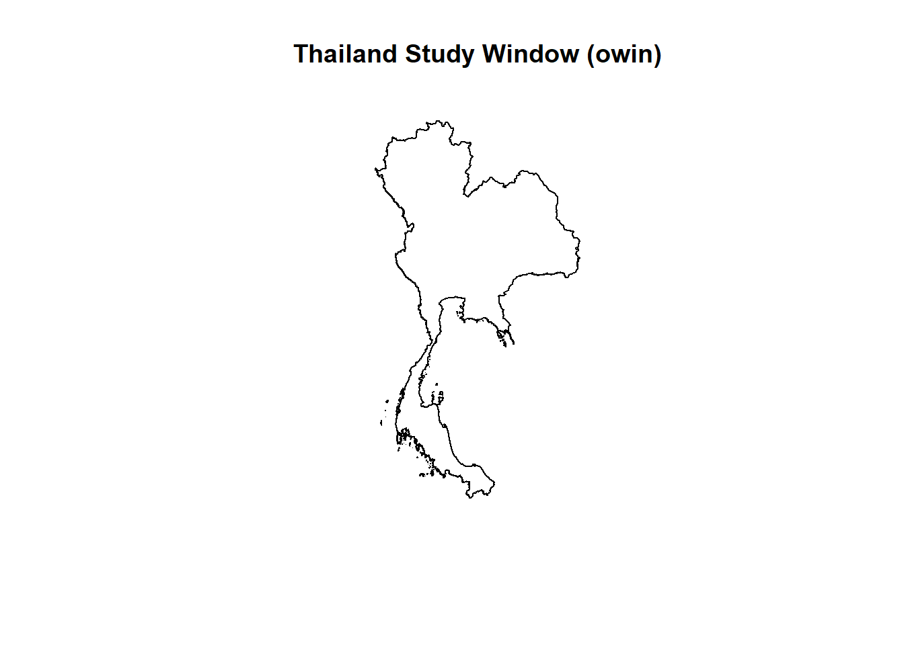
Note
The reason why Tmap is being used instead of the usual plot() :
tmap is a package helps to render the ploygons better than plots, preventing overlapping borders like what plot() will do. Basically it is better at rendering and plotting the multi-ploygon background more clearly.
Task 2: First-Order Point Pattern Analysis
Computing accident STKDE by Month
What we currently have is only the overall accident distribution in the entire year of 2022, but we cannot see where and when the accidents would occur together.
With the STKDE by month helping to estimate a 3D intensity surface on 1 plot per month for a total of 12 plots, it gives a smoothed continuous surface to help compare the intensity of accidents. We can see which areas within Thailand have a high accident intensity and in which months the intensity is concentrated.
Therefore STKDE by month is done for the 1st Order Point Analysis because it provides the insights on the where and when the accident happens together, or the analysis of both spatial and temporal dimensions simultaneously.
Step 1: Converting to OWIN format
Our current file is in the sf object with 70 polygon regions. However, for the ppp and STKDE to be conducted we need to transform it to a single OWIN format to conduct the First-Order Pattern Analysis.
# Union all provinces into a single polygon
thailand_sf <- provinces %>%
st_make_valid() %>%
st_union() %>%
st_zm(drop = TRUE, what = "ZM") %>%
st_transform(crs = 32647)
# Convert to OWIN
thailand_owin <- as.owin(thailand_sf)
# We put in class and summary to ensure that our we have indeed converted this to OWIN format as required.
class(thailand_owin)[1] "owin"summary(thailand_owin)Window: polygonal boundary
70 separate polygons (no holes)
vertices area relative.area
polygon 1 68307 5.13481e+11 9.96e-01
polygon 2 398 6.22860e+06 1.21e-05
polygon 3 614 4.22645e+06 8.20e-06
polygon 4 343 5.28725e+06 1.03e-05
polygon 5 65 1.38434e+07 2.68e-05
polygon 6 65 4.18966e+06 8.13e-06
polygon 7 616 5.12128e+06 9.93e-06
polygon 8 28 1.15450e+06 2.24e-06
polygon 9 793 2.10501e+08 4.08e-04
polygon 10 85 3.76729e+06 7.31e-06
polygon 11 48 2.76015e+06 5.35e-06
polygon 12 207 1.42079e+06 2.76e-06
polygon 13 49 2.02952e+06 3.94e-06
polygon 14 484 1.22550e+07 2.38e-05
polygon 15 48 2.46727e+06 4.78e-06
polygon 16 745 1.11694e+08 2.17e-04
polygon 17 38 1.43222e+06 2.78e-06
polygon 18 88 1.02373e+06 1.99e-06
polygon 19 147 1.89559e+06 3.68e-06
polygon 20 209 1.48895e+06 2.89e-06
polygon 21 251 1.88460e+07 3.65e-05
polygon 22 42 1.08756e+06 2.11e-06
polygon 23 14 2.17582e+06 4.22e-06
polygon 24 44 2.73306e+06 5.30e-06
polygon 25 472 2.03006e+07 3.94e-05
polygon 26 976 1.22167e+08 2.37e-04
polygon 27 448 1.66910e+07 3.24e-05
polygon 28 35 1.53899e+06 2.98e-06
polygon 29 47 4.82003e+06 9.35e-06
polygon 30 1703 2.35879e+08 4.57e-04
polygon 31 95 1.54700e+07 3.00e-05
polygon 32 12 1.24960e+06 2.42e-06
polygon 33 389 1.33179e+07 2.58e-05
polygon 34 180 8.26376e+06 1.60e-05
polygon 35 16 2.85487e+06 5.54e-06
polygon 36 382 6.72333e+06 1.30e-05
polygon 37 134 1.83542e+07 3.56e-05
polygon 38 475 9.54313e+07 1.85e-04
polygon 39 39 1.33566e+06 2.59e-06
polygon 40 229 6.67462e+07 1.29e-04
polygon 41 32 1.98965e+06 3.86e-06
polygon 42 45 6.59422e+06 1.28e-05
polygon 43 140 3.86996e+06 7.51e-06
polygon 44 94 3.00058e+06 5.82e-06
polygon 45 3243 5.12443e+08 9.94e-04
polygon 46 599 3.57589e+07 6.93e-05
polygon 47 432 8.79243e+07 1.71e-04
polygon 48 38 2.03000e+06 3.94e-06
polygon 49 233 1.38498e+07 2.69e-05
polygon 50 84 3.73855e+06 7.25e-06
polygon 51 302 7.99302e+06 1.55e-05
polygon 52 115 4.66422e+06 9.05e-06
polygon 53 265 9.92294e+06 1.92e-05
polygon 54 13 2.20961e+06 4.29e-06
polygon 55 225 1.70308e+06 3.30e-06
polygon 56 135 1.20558e+06 2.34e-06
polygon 57 656 6.27813e+07 1.22e-04
polygon 58 789 7.80730e+07 1.51e-04
polygon 59 353 4.69610e+06 9.11e-06
polygon 60 188 2.40409e+06 4.66e-06
polygon 61 206 3.59613e+06 6.97e-06
polygon 62 173 7.59796e+06 1.47e-05
polygon 63 187 1.65836e+06 3.22e-06
polygon 64 54 3.26622e+07 6.33e-05
polygon 65 258 1.42628e+06 2.77e-06
polygon 66 809 1.52418e+08 2.96e-04
polygon 67 2456 2.87236e+07 5.57e-05
polygon 68 962 2.90690e+07 5.64e-05
polygon 69 551 4.03691e+06 7.83e-06
polygon 70 873 2.04046e+06 3.96e-06
enclosing rectangle: [325229.8, 1213613.6] x [620840, 2263214.7] units
(888400 x 1642000 units)
Window area = 5.1564e+11 square units
Fraction of frame area: 0.353Since current class here is now OWIN we are good to go to step 2.
Step 2 : Extracting Data by Month
when we use ppp , it only accepts numeric or character marks. However currently we only have the date (incident_datetime) by a date format. Therefore, we will have to extract out the Month_num (1 to 12 from January to December) and Month_fac to produce readable facet labels without inline conversion.
DayofYear is also extracted for now in case of the need for analysis of each specific day of the year.
acc <- acc %>%
mutate(
DayofYear = yday(incident_datetime),
Month_num = month(incident_datetime),
Month_fac = month(incident_datetime, label = TRUE, abbr = FALSE)
)Step 3 : Visualising accidents by month
Before computing the KDE, it is important to plot a faceted point map (one small map of Thailand per month).
This is a first order visualisation of the data to understand the spatial distribution of accidents across the year and if there is any seasonality before computing the KDE. It also acts as the baseline before the STKDE is done to allow a comparison to be done.
tm_shape(thailand_sf) +
tm_polygons() +
tm_shape(acc) +
tm_dots(size = 0.1) +
tm_facets(by = "Month_fac",
free.coords = FALSE,
drop.units = TRUE)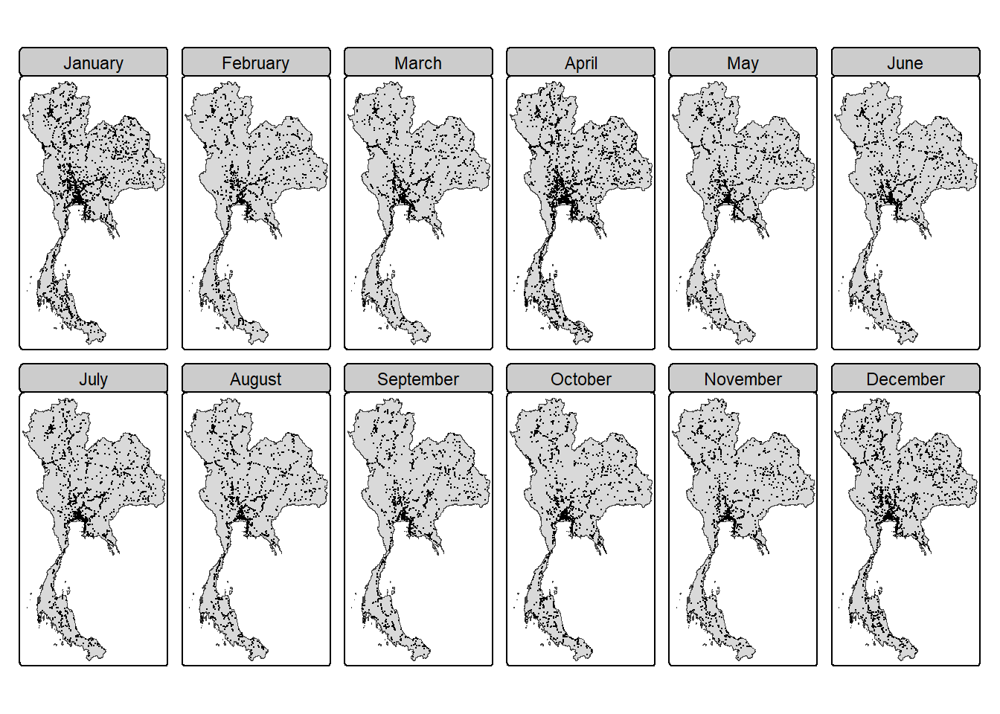
Important
Analysis of plot.
From the plot, it can be seen that April and December have a heavier distribution throughout the months in the year, which ties in the monthly trends in Thailand with higher vehicle numbers on the road from the Songkran Holiday travelling in April and New Year Holiday travels in December.
However it is to note that in all 12 months, there is a darker concentration around the Bangkok and central provinces proving that Bangkok area is a permanent high-risk accident zone. In contrast, the North-Eastern Region in Thailand is showing fewer dots in the visuals throughout the year reflecting a lower accident volume assuming that the data provided is fully representative of all accidents that occurred in 2022 (as mentioned in assumptions made).
Step 4 : coverting to ppp
Since we are looking at the Month specifically we will keep only the Month number column and use it to convert to ppp.
It is also recommended to check again here to see if there are duplicated units. Usually this is done to prevent any inaccuracies when analysing data. However in this case, it is expected for there to be multiple crashes at the same intersection so it’s fine for there to be duplicate values. The presence of duplicate values if any violates the strict independence assumption of point pattern analysis, but the events are retained because they represent genuinely distinct accidents. Therefore, the duplicate check is just to note that there are these sort of multi-crash accidents, and highlight the presence of this analytical limitation when conducting the analysis.
# Keep only Month_num column
acc_month <- acc %>% select(Month_num)
# Convert to ppp
acc_month_ppp <- as.ppp(acc_month)
# Check for duplicates
any(duplicated(acc_month_ppp))[1] TRUEStep 5 : Compute STKDE
Now the STKDE is finally computed using the spattemp.density function.
acc_month_owin <- acc_month_ppp[thailand_owin]
summary(acc_month_owin)Marked planar point pattern: 20815 points
Average intensity 4.036734e-08 points per square unit
*Pattern contains duplicated points*
Coordinates are given to 10 decimal places
marks are numeric, of type 'double'
Summary:
Min. 1st Qu. Median Mean 3rd Qu. Max.
1.000 3.000 6.000 6.328 9.000 12.000
Window: polygonal boundary
70 separate polygons (no holes)
vertices area relative.area
polygon 1 68307 5.13481e+11 9.96e-01
polygon 2 398 6.22860e+06 1.21e-05
polygon 3 614 4.22645e+06 8.20e-06
polygon 4 343 5.28725e+06 1.03e-05
polygon 5 65 1.38434e+07 2.68e-05
polygon 6 65 4.18966e+06 8.13e-06
polygon 7 616 5.12128e+06 9.93e-06
polygon 8 28 1.15450e+06 2.24e-06
polygon 9 793 2.10501e+08 4.08e-04
polygon 10 85 3.76729e+06 7.31e-06
polygon 11 48 2.76015e+06 5.35e-06
polygon 12 207 1.42079e+06 2.76e-06
polygon 13 49 2.02952e+06 3.94e-06
polygon 14 484 1.22550e+07 2.38e-05
polygon 15 48 2.46727e+06 4.78e-06
polygon 16 745 1.11694e+08 2.17e-04
polygon 17 38 1.43222e+06 2.78e-06
polygon 18 88 1.02373e+06 1.99e-06
polygon 19 147 1.89559e+06 3.68e-06
polygon 20 209 1.48895e+06 2.89e-06
polygon 21 251 1.88460e+07 3.65e-05
polygon 22 42 1.08756e+06 2.11e-06
polygon 23 14 2.17582e+06 4.22e-06
polygon 24 44 2.73306e+06 5.30e-06
polygon 25 472 2.03006e+07 3.94e-05
polygon 26 976 1.22167e+08 2.37e-04
polygon 27 448 1.66910e+07 3.24e-05
polygon 28 35 1.53899e+06 2.98e-06
polygon 29 47 4.82003e+06 9.35e-06
polygon 30 1703 2.35879e+08 4.57e-04
polygon 31 95 1.54700e+07 3.00e-05
polygon 32 12 1.24960e+06 2.42e-06
polygon 33 389 1.33179e+07 2.58e-05
polygon 34 180 8.26376e+06 1.60e-05
polygon 35 16 2.85487e+06 5.54e-06
polygon 36 382 6.72333e+06 1.30e-05
polygon 37 134 1.83542e+07 3.56e-05
polygon 38 475 9.54313e+07 1.85e-04
polygon 39 39 1.33566e+06 2.59e-06
polygon 40 229 6.67462e+07 1.29e-04
polygon 41 32 1.98965e+06 3.86e-06
polygon 42 45 6.59422e+06 1.28e-05
polygon 43 140 3.86996e+06 7.51e-06
polygon 44 94 3.00058e+06 5.82e-06
polygon 45 3243 5.12443e+08 9.94e-04
polygon 46 599 3.57589e+07 6.93e-05
polygon 47 432 8.79243e+07 1.71e-04
polygon 48 38 2.03000e+06 3.94e-06
polygon 49 233 1.38498e+07 2.69e-05
polygon 50 84 3.73855e+06 7.25e-06
polygon 51 302 7.99302e+06 1.55e-05
polygon 52 115 4.66422e+06 9.05e-06
polygon 53 265 9.92294e+06 1.92e-05
polygon 54 13 2.20961e+06 4.29e-06
polygon 55 225 1.70308e+06 3.30e-06
polygon 56 135 1.20558e+06 2.34e-06
polygon 57 656 6.27813e+07 1.22e-04
polygon 58 789 7.80730e+07 1.51e-04
polygon 59 353 4.69610e+06 9.11e-06
polygon 60 188 2.40409e+06 4.66e-06
polygon 61 206 3.59613e+06 6.97e-06
polygon 62 173 7.59796e+06 1.47e-05
polygon 63 187 1.65836e+06 3.22e-06
polygon 64 54 3.26622e+07 6.33e-05
polygon 65 258 1.42628e+06 2.77e-06
polygon 66 809 1.52418e+08 2.96e-04
polygon 67 2456 2.87236e+07 5.57e-05
polygon 68 962 2.90690e+07 5.64e-05
polygon 69 551 4.03691e+06 7.83e-06
polygon 70 873 2.04046e+06 3.96e-06
enclosing rectangle: [325229.8, 1213613.6] x [620840, 2263214.7] units
(888400 x 1642000 units)
Window area = 5.1564e+11 square units
Fraction of frame area: 0.353st_kde <- spattemp.density(acc_month_owin)
summary(st_kde)Spatiotemporal Kernel Density Estimate
Bandwidths
h = 38159.91 (spatial)
lambda = 0.0079 (temporal)
No. of observations
20815
Spatial bound
Type: polygonal
2D enclosure: [325229.8, 1213614] x [620840, 2263215]
Temporal bound
[1, 12]
Evaluation
128 x 128 x 12 trivariate lattice
Density range: [7.353343e-15, 2.439755e-10]The spattemp.density() function has estimated a Spatial bandwidth of 38159.91 (~38.16km). This is with the smoothing distance in UTM Zone 47N metres. It is known that a larger h produces a smoother, more generalised surface while a smaller h reveals local hot spots. Overall it is decided that the spatial bandwidth should not be further changed it balances detail against noise given the irregular shape of Thailand’s boundary.
The temporal bandwidth is estimated to be lambda = 0.0079 (in units of the temporal range). Since time was rescaled to [1, 12] months, we have a narrow temporal smoothing window of about 0.1 month, which means that the density surface will change sharply month-to-month which is best to emphasize the high intensity time scope of April and December. Therefore edge correction is applied to reduce the bias near Thailand’s border, where points outside the boundary cannot be observed but still contribute to the intensity estimate.
The trivariate density is normalised and conditioned to allow each monthly slice to integrate to 1 and make for direct visual comparison across months.
Step 6 : Plot out STKDE
After the computation, the STKDE is plotted out.
# The plot is split to show 6 at a time, 2 rows 3 columns per page so each month STKDE is large enough to see to make proper analysis.
tims <- c(1,2,3,4,5,6,7,8,9,10,11,12)
par(mfcol=c(2,3))
for(i in tims){
plot(st_kde, i,
override.par=FALSE,
fix.range=TRUE,
main=paste("KDE at month",i))
}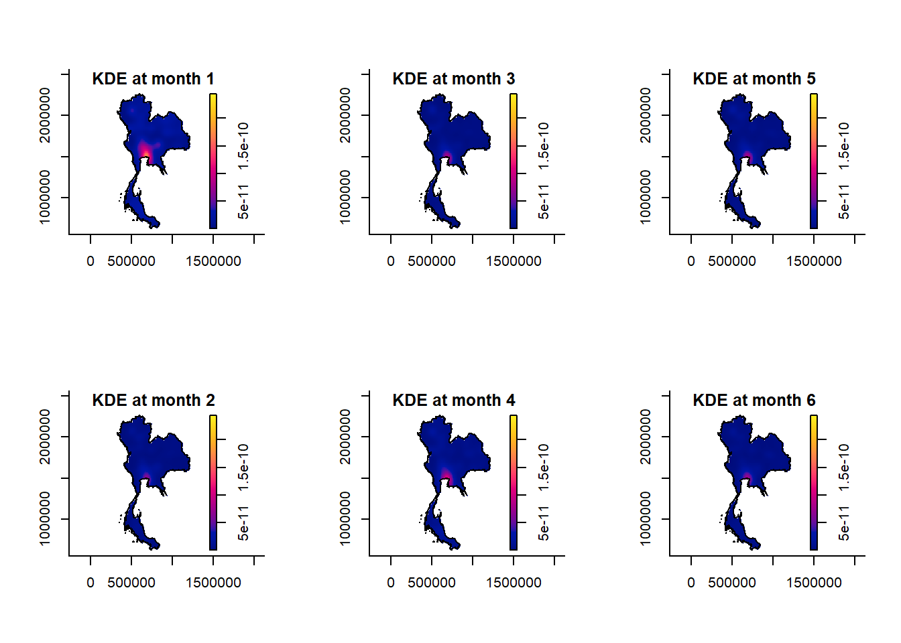
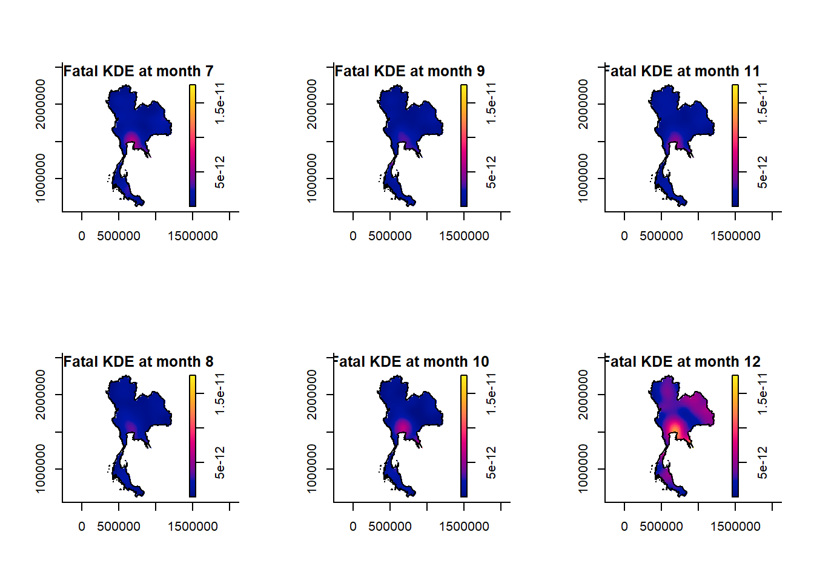
Important
Analysis of plot.
The STKDE visualizations confirm the initial findings from our raw monthly map. More specifically :
April and December peaks in accident numbers with January coming behind as a close third.
Bangkok regions is a hot spot for accident occurrence through the red colour intensity in those months
However it also refines a few points. First, the South peninsula area actually shows a low density per unit area rather than the entire area being a hot spot. The prominence of the entire South Peninsula was rather shown in the initial monthly plots because of the raw accident counts inflating the concentration of accident rates.
Furthermore, elaborating on intensity, other than Bangkok, the entire country shows a uniformly low accident intensity given the blue colour scale across all these areas in all months. This proves that the Bangkok Region is the single main dominant accident hot spot in Thailand for the year 2022.
Computing Death Toll using STKDE by Month
There are different levels of severity of vehicle accidents, from a light collision without injuries to heavy injuries in the ICU or even death.
Therefore, we will also look at the death toll within Thailand from accidents using STKDE by month again.
# Filter to fatal accidents only
acc_fatal <- acc %>%
filter(number_of_fatalities > 0) %>%
mutate(
Month_num = month(incident_datetime),
Month_fac = month(incident_datetime, label = TRUE, abbr = FALSE)
)
# Convert to ppp
acc_fatal_month <- acc_fatal %>% select(Month_num)
acc_fatal_ppp <- as.ppp(acc_fatal_month)
acc_fatal_owin <- acc_fatal_ppp[thailand_owin]
# Conduct STKDE
st_kde_fatal <- spattemp.density(acc_fatal_owin)
summary(st_kde_fatal)Spatiotemporal Kernel Density Estimate
Bandwidths
h = 66182.92 (spatial)
lambda = 0.0417 (temporal)
No. of observations
2273
Spatial bound
Type: polygonal
2D enclosure: [325229.8, 1213614] x [620840, 2263215]
Temporal bound
[1, 12]
Evaluation
128 x 128 x 12 trivariate lattice
Density range: [1.799614e-14, 1.756263e-11]# Plotting visualisation
par(mfcol = c(2, 3))
for (i in 1:12) {
plot(st_kde_fatal, i, override.par = FALSE, fix.range = TRUE,
main = paste("Fatal KDE at month", i))
}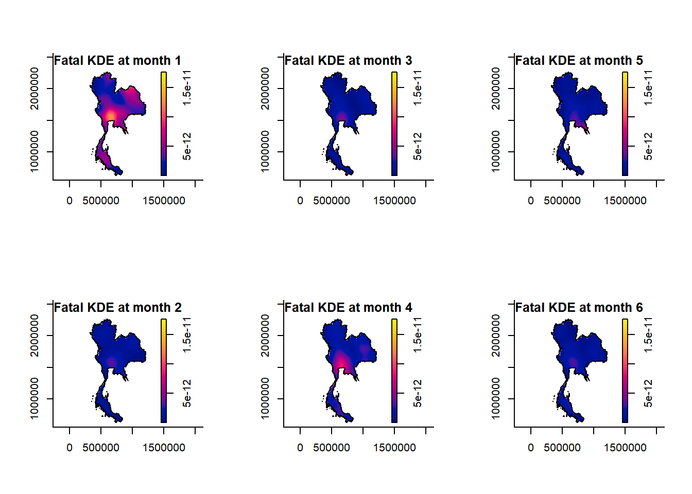

Important
Analysis of plot.
Now this plot on the death toll reveals major different trends than the overall accident plots, suggesting that accident frequency and severity are following different spatial and temporal patterns.
Here, the fatal accident intensity is elevated in Northern, North-Eastern Thailand, and Bangkok in mainly the January and December months, where January has replaced April as the peak month in regards to fatality of accidents.
Since the rural roads are mainly in the North and North-East regions of Thailand, it fits the general fact that rural roads generates fewer but higher severity accidents leading to higher fatal accident rates and urban areas will have more low speed collision which is usually not as severe.
First Order SPAA by Highlighted Regions (Clark Evans)
Now that the overview analysis of the entire country of Thailand is done, there are 3 regions that are flagged out to be accident hotspots or have a higher fatality intensity :
- Bangkok Metropolitan Region (BMR) — the dominant urban accident hotspot.
- Northern Thailand — rural, mountainous, elevated fatality intensity.
- North-Eastern Thailand (Isan) — rural, elevated fatality intensity.
Therefore even though the main region of study should be in the Bangkok region, it is deemed necessary to study the 3 regions in more detail due to the alarming impact of fatalities in these 3 regions. Especially since the SPKDE only helps to say where in Thailand are the accidents more intense, and not if the specific accidents are clustered or dispersed. The Clark-Evans Test however, provides statistical evidence that the visual hot spot you saw in the STKDE is real, not a coincidence of plotting, which is also why we are looking at the highlighed Regions throuh the Clark Evans Testing for our First order SPAA.
The Clark-Evans Test assumes there is no duplicated points. So it is required to ensure that we check there is no duplicated points since any duplicated points will inflate the clustering signal.
Step 1 : Defining the Study Regions
We have our regions that we want to drill into to study. However the regions are made up of a numerous number of provinces, where our data only has the column of provinces or districts. Therefore, we have to put this additional step to define what our study regions are.
This is a code to confirm on the provinces within our dataset as well as the spelling in each one of them before proceeding with further analysis. If the spelling is wrong, we will have issues in writing out the right code.
provinces %>%
st_drop_geometry() %>%
pull(shapeName) %>%
sort() %>%
print() [1] "Amnat Charoen Province" "Ang Thong Province"
[3] "Bangkok" "Bueng Kan Province"
[5] "Buri Ram Province" "Chachoengsao Province"
[7] "Chai Nat Province" "Chaiyaphum Province"
[9] "Chanthaburi Province" "Chiang Mai Province"
[11] "Chiang Rai Province" "Chon Buri Province"
[13] "Chumphon Province" "Kalasin"
[15] "Kamphaeng Phet Province" "Kanchanaburi Province"
[17] "Khon Kaen Province" "Krabi Province"
[19] "Lampang Province" "Lamphun Province"
[21] "Loei Province" "Lopburi Province"
[23] "Mae Hong Son Province" "Maha Sarakham Province"
[25] "Mukdahan Province" "Nakhon Nayok Province"
[27] "Nakhon Pathom Province" "Nakhon Phanom Province"
[29] "Nakhon Ratchasima Province" "Nakhon Sawan Province"
[31] "Nakhon Si Thammarat Province" "Nan Province"
[33] "Narathiwat Province" "Nong Bua Lam Phu Province"
[35] "Nong Khai Province" "Nonthaburi Province"
[37] "Pathum Thani Province" "Pattani Province"
[39] "Phangnga Province" "Phatthalung Province"
[41] "Phayao Province" "Phetchabun Province"
[43] "Phetchaburi Province" "Phichit Province"
[45] "Phitsanulok Province" "Phra Nakhon Si Ayutthaya Province"
[47] "Phrae Province" "Phuket Province"
[49] "Prachin Buri Province" "Prachuap Khiri Khan Province"
[51] "Ranong Province" "Ratchaburi Province"
[53] "Rayong Province" "Roi Et Province"
[55] "Sa Kaeo Province" "Sakon Nakhon Province"
[57] "Samut Prakan Province" "Samut Sakhon Province"
[59] "Samut Songkhram Province" "Saraburi Province"
[61] "Satun Province" "Si Sa Ket Province"
[63] "Sing Buri Province" "Songkhla Province"
[65] "Sukhothai Province" "Suphan Buri Province"
[67] "Surat Thani Province" "Surin Province"
[69] "Tak Province" "Trang Province"
[71] "Trat Province" "Ubon Ratchathani Province"
[73] "Udon Thani Province" "Uthai Thani Province"
[75] "Uttaradit Province" "Yala Province"
[77] "Yasothon Province" Therefore, we will be using the following provinces (decided after research on the definition of the Bangkok Metropolitan Region (BMR), Northern Thailand and North Eastern Thailand). As shown in the code chunk below, the 3 regions that we want to screen in for the analysis are now generated here.
# BMR Region
bmr_provinces <- c(
"Bangkok",
"Nonthaburi Province",
"Pathum Thani Province",
"Samut Prakan Province",
"Samut Sakhon Province",
"Nakhon Pathom Province"
)
# Northern Thailand
north_provinces <- c(
"Chiang Mai Province",
"Chiang Rai Province",
"Lampang Province",
"Lamphun Province",
"Mae Hong Son Province",
"Nan Province",
"Phayao Province",
"Phrae Province",
"Uttaradit Province"
)
# North-Eastern Thailand
northeast_provinces <- c(
"Kalasin",
"Khon Kaen Province",
"Chaiyaphum Province",
"Nakhon Phanom Province",
"Nakhon Ratchasima Province",
"Bueng Kan Province",
"Maha Sarakham Province",
"Mukdahan Province",
"Yasothon Province",
"Roi Et Province",
"Loei Province",
"Sakon Nakhon Province",
"Surin Province",
"Nong Khai Province",
"Nong Bua Lam Phu Province",
"Amnat Charoen Province",
"Udon Thani Province",
"Ubon Ratchathani Province",
"Buri Ram Province",
"Si Sa Ket Province"
)Step 2 : Building the Region Objects
Now we will build the region objects
make_region <- function(prov_names, region_name) {
sf_obj <- provinces %>%
filter(shapeName %in% prov_names) %>%
st_make_valid() %>%
st_transform(32647)
owin_obj <- as.owin(sf_obj %>% st_union() %>% st_zm(drop = TRUE, what = "ZM"))
cat(region_name, ":", nrow(sf_obj), "provinces\n")
list(sf = sf_obj, owin = owin_obj)
}
bmr <- make_region(bmr_provinces, "BMR")BMR : 6 provincesnorth <- make_region(north_provinces, "Northern")Northern : 9 provincesne <- make_region(northeast_provinces, "North-Eastern")North-Eastern : 20 provincesStep 3 : Generating Clark-Evans and KDE
# BMR
acc_bmr <- acc %>% st_filter(bmr$sf, .predicate = st_within)
bmr_ppp <- as.ppp(acc_bmr); Window(bmr_ppp) <- bmr$owin
ce_bmr <- clarkevans.test(bmr_ppp, correction = "none")
ce_bmr
Clark-Evans test
No edge correction
Z-test
data: bmr_ppp
R = 0.26515, p-value < 2.2e-16
alternative hypothesis: two-sided# Northern
acc_north <- acc %>% st_filter(north$sf, .predicate = st_within)
north_ppp <- as.ppp(acc_north); Window(north_ppp) <- north$owin
ce_north <- clarkevans.test(north_ppp, correction = "none")
ce_north
Clark-Evans test
No edge correction
Z-test
data: north_ppp
R = 0.3014, p-value < 2.2e-16
alternative hypothesis: two-sided# North-Eastern
acc_ne <- acc %>% st_filter(ne$sf, .predicate = st_within)
ne_ppp <- as.ppp(acc_ne); Window(ne_ppp) <- ne$owin
ce_ne <- clarkevans.test(ne_ppp, correction = "none")
ce_ne
Clark-Evans test
No edge correction
Z-test
data: ne_ppp
R = 0.41935, p-value < 2.2e-16
alternative hypothesis: two-sidedpar(mfrow = c(1, 3))
plot(
st_geometry(bmr$sf),
main = "Bangkok Metropolitan Region"
)
plot(
st_geometry(north$sf),
main = "Northern Thailand"
)
plot(
st_geometry(ne$sf),
main = "North-Eastern Thailand"
)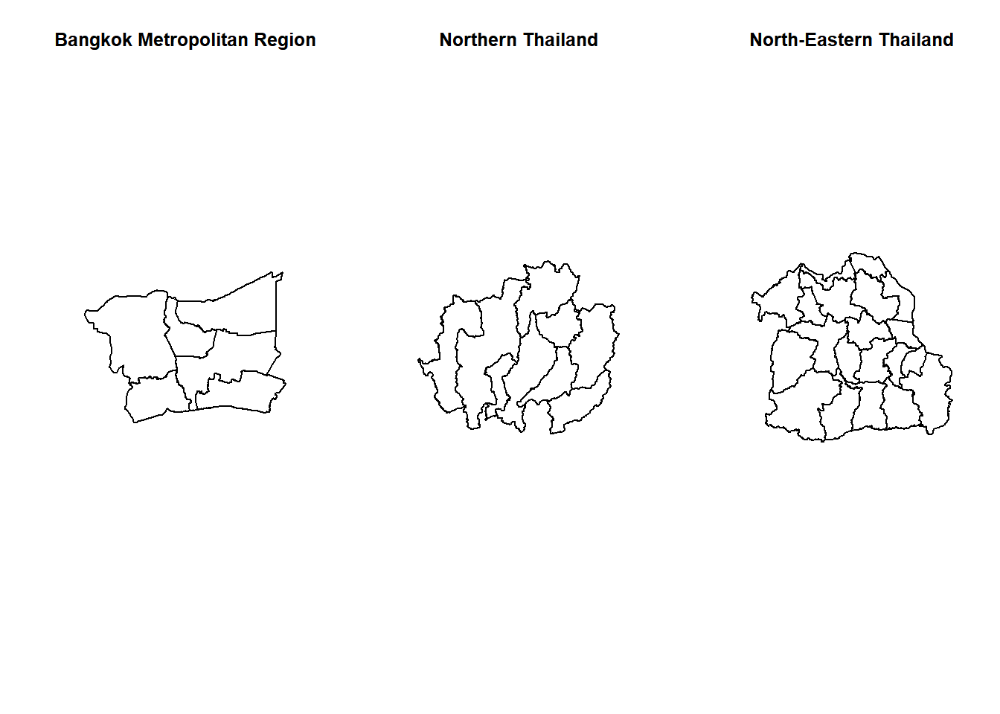
Step 4: Creating OWIN objects
bmr_owin <- bmr$owin
north_owin <- north$owin
ne_owin <- ne$owinStep 5: Combination of OWIN and Point events
We have to put the acc
acc_ppp <- as.ppp(acc)
class(acc_ppp)[1] "ppp"In usual circumstances, it is possible to directly convert the OWIN objects to ppp using ppp[owin]. However the current Thailand boundaries are defined using very detailed polygons with many vertices in the bounary rings. Thus it is required to simplify the OWIN to ensure that the computation is properly reduced. The analytical results below will not be changed.
#Simplification of OWIN object using st_simplify
make_simple_owin <- function(sf_obj, tol_m) {
sf_obj %>%
st_make_valid() %>%
st_simplify(dTolerance = tol_m, preserveTopology = TRUE) %>%
st_union() %>%
st_zm(drop = TRUE, what = "ZM") %>%
as.owin()
}
bmr_owin <- make_simple_owin(bmr$sf, tol_m = 2000)
north_owin <- make_simple_owin(north$sf, tol_m = 3000)
ne_owin <- make_simple_owin(ne$sf, tol_m = 3000)
# now we can convert to ppp
acc_bmr_ppp <- acc_ppp[bmr_owin]
acc_north_ppp <- acc_ppp[north_owin]
acc_ne_ppp <- acc_ppp[ne_owin]Step 6: Rescaling from m to km
Currently the dataset is set to be in metres (UTM coordinates). So all the bandwidths and distances will be in enormous numbers within all the plots and calculations will be tough to read and interpret if the rescaling not be done.
acc_bmr_ppp.km <- rescale.ppp(acc_bmr_ppp, 1000, "km")
acc_north_ppp.km <- rescale.ppp(acc_north_ppp, 1000, "km")
acc_ne_ppp.km <- rescale.ppp(acc_ne_ppp, 1000, "km")Step 7 : Plotting
par(mfrow = c(2, 2))
plot(unmark(acc_bmr_ppp.km), main = "BMR",cex = 0.5)
plot(unmark(acc_north_ppp.km), main = "Northern Thailand",cex = 0.5)
plot(unmark(acc_ne_ppp.km), main = "North-Eastern Thailand", cex = 0.5)
par(mfrow = c(1, 1))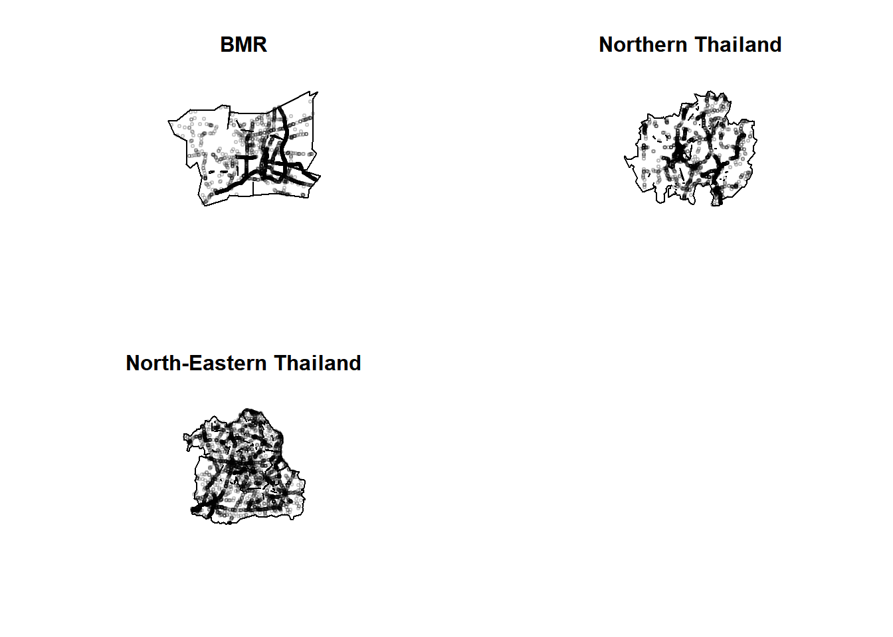
note : The analysis of the plots are included within the Clark Evans statistical testing.
Clark-Evans Statistical Testing
Now that the plots are out and we can see where in the 3 regions are the accidents are clustered or spread out at, we conduct the Clark Evans statisitical testing to see if the results are significant.
BMR
clarkevans.test(acc_bmr_ppp,
correction="none",
clipregion=NULL,
alternative=c("two.sided"),
nsim=999)
Clark-Evans test
No edge correction
Z-test
data: acc_bmr_ppp
R = 0.26425, p-value < 2.2e-16
alternative hypothesis: two-sidedsum(duplicated(acc_bmr_ppp))[1] 0Since p < 2.2 × 10⁻¹⁶ <0.05 it proves that the results are highly significant and the accidents in the Bangkok Metropolitan Region has a highly significant spatial clustering. With the R =0.265, it shows the observed average nearest neighbour distance is at 73.5% closer than normal to consider it as spatial randomness. Therefore with reference from the Clark Evans where there are very distinct lines on the highways of the Bangkok Metropolitan Region, these spots are where the concentrated accidents are which are the areas proven where the government needs to intervene to have the most impact in regards to the accident occurrences.
North-Eastern Thailand
clarkevans.test(acc_ne_ppp,
correction="none",
clipregion=NULL,
alternative=c("two.sided"),
nsim=999)
Clark-Evans test
No edge correction
Z-test
data: acc_ne_ppp
R = 0.41683, p-value < 2.2e-16
alternative hypothesis: two-sidedsum(duplicated(acc_ne_ppp))[1] 0Since p < 2.2 × 10⁻¹⁶ <0.05, it proves that the results are highly significant and the accidents in the Thailand Northern East Region has a highly significant spatial clustering, though less of an extent than the Bangkok Metropolitan region. With the R =0.41935, it shows the observed average nearest neighbour distance is at 59.1% closer than normal to consider it as spatial randomness. Therefore with reference from the Clark Evans plot where the accidents are more spread out across Thailand as compared with the other 2 plots, but when looking close higher accident intensity areas can still be seen, it supports the fact that the Bangkok Metropolitan region is more clustered that the Northern East region. These areas in the Northern East region are the areas where the government needs to intervene to have the most impact in regards to the accident occurrences.
Northern Thailand
clarkevans.test(acc_north_ppp,
correction="none",
clipregion=NULL,
alternative=c("two.sided"),
nsim=999)
Clark-Evans test
No edge correction
Z-test
data: acc_north_ppp
R = 0.29995, p-value < 2.2e-16
alternative hypothesis: two-sidedsum(duplicated(acc_north_ppp))[1] 0Since p < 2.2 × 10⁻¹⁶ <0.05, it proves that the results are highly significant and the accidents in the Bangkok Metropolitan Region has a highly significant spatial clustering. With the R =0.3014, it shows the observed average nearest neighbour distance is at 70.9% closer than normal to consider it as spatial randomness. Therefore with reference from the Clark Evans plot where there are darker intensity points plotted in the bottom area of Northern Thailand, these spots are where the concentrated accidents are which are the areas proven where the government needs to intervene to have the most impact in regards to the accident occurrences.
Analysis & Recommendations
From the analysis, it is known that Bangkok is a persistent hotspot for accidents to occur, especially in the holidays of April and December. However, in January and December the accident fatality intensity spikes at the North and Northeast Regions of Thailand.
It is proven that these observations are strongly significant given the p < 2.2 × 10⁻¹⁶ <0.05 in the Clark Evans test in all tested regions where accident intensity are shown to be stronger. And that all highlighted regions (BMR, Northern East, North Thailand) does have a highly significant spatial clustering.
Therefore, it is recommended for these measures to take place based on the insights :
Accident Frequency
Short term: It would be imperative to implement more speed checks, DUI checkpoints and traffic patrols at the densely plotted out points within the 3 regions at the Clarks Evans plots especially in the months of January, April and December. This is to counter the spike in accident numbers due to the increased vehicle numbers on the road due to their main holiday periods. It will be a temporary measure to allow time to plan and deploy the long term solutions.
Long term : If the accident distribution in the Bangkok area is persistently high within Thailand then it suggests that regardless of the reason whether it is due to high traffic volume, poorly maintained roads or lack of traffic safety enforcement a targeted investigation on the root problem is required. After which interventions like road re-designing or traffic law enforcement are necessary to ensure safety in the future.
Accident Severity
Short term : There will be a need for the Transport authority within Thailand to go on high alert and prioritize the emergency-response ability within the North and North Eastern provinces/districts during January and December, with more emphasis in the Northern Eastern Thailand due to the fact that the accident areas within NE Thailand is less clustered and more spread out thus increasing the risks. This will be to allow more efficient and faster emergency responses to the fewer but more severe (with higher risk of death) accidents, instead of focusing on high volume enforcement in Bangkok.
Long Term : Suggestion would be to plan, improve and implement better speed-limit enforcement infrastructure, Road-surface maintenance, and roadside safety measures like having more barriers, lighting, signages to help on visibility and safety of the drivers on the road in the rural areas.
Task 3: Second-Order Point Pattern Analysis
Now, since we had identified that the Bangkok Metropolitan Region, North Eastern Region and North Thailand as the hot-spots for accidents to occur in Thailand, we will screen in to analyse more deeply within this region to get the most impact out of the analysis in preventing future accidents on the road.
For this Second Order Point Pattern Analysis, we will be utilising the K and L Functions. The reason is as stated below.
Clark Evans only looks at a one distance to the nearest point, which computes R and returns a p value for significance at a very short range scale (nearest neighbour distance). However, the K Function and L Function helps to provide a better idea on how clustering varies with distance which the previous Clark-Evans test does not provide.
Previously we learnt in Thailand Is there clustering at all? Now as a research question we want to understand at which distance does this clustering occur now that we had proven the existance of the clustering at these 3 main regions : Bangkok Metropolitan Region, North Eastern Region and North Thailand.
K - Function
In the previous task 2, the Clark-Evans test has established that the accidents does cluster significantly in all 3 highlighted regions, but this is only proven at the nearest neighbour scale. Therefore, for the second order analysis the Ripley’s K Function is conducted to get an understanding on the clustering across the full range of spatial scales. Specifically (even though there is also the F and G Function), the K function allows every distance of clustering to be captured to the rmax so every event (denoted as accident in this scenario) up to the rmax can be measured, which helps to identify the spatial scales where the accident is concentrating which is what is required for the objective of the exercise which is to better plan for road safety.
Considerations & Assumptions made
Rmax Consideration for K function calculation
Before the K function is calculated, we look at the rmax parameter. This is the parameter that sets the maximum inter-point distance at which Ripley’s K is evaluated, and is important to evaluate because Ripley’s edge correction would be unstable as the evaluation distance grows which is the case for our study where we are looking at large regions within Thailand.
Usually, the default rmax is already derived from the bounding rectangle of the window so the code chunk below is not necessary. However for our scenario, it is necessary to compute the estimated rmax parameters since our dataset has a multipolygon which does overstate the region effective extent. This is for more accurate results and faster computation within R studio. The computed distances below represent the upper bound where K can be reliably interpreted for each of the regions.
# For each region, look at the window's extent in km
rmax_rule <- function(ppp) {
W <- Window(ppp)
x_extent <- diff(W$xrange) # in km
y_extent <- diff(W$yrange) # in km
rmax <- min(x_extent, y_extent) / 4
c(x_extent = x_extent, y_extent = y_extent, rmax = rmax)
}
rmax_rule(acc_bmr_ppp.km) x_extent y_extent rmax
124.84196 94.33823 23.58456 rmax_rule(acc_north_ppp.km) x_extent y_extent rmax
422.75425 365.13956 91.28489 rmax_rule(acc_ne_ppp.km)x_extent y_extent rmax
513.7973 484.8929 121.2232 Therefore the rmax values for bmr, North Thailand and Northern East Thailand is rounded to be 23.58km, 91.37km and 121.33km respectively.
Simplification of ppp
As mentioned in the previous step when creating the ppp in Task 2, the current Thailand boundaries are defined using very detailed polygons with many vertices in the boundary rings. So the OWIN is simplified to ensure that the computation is properly reduced. The analytical results below will not be changed.
Limitations/Caveats
Reduction of nrval and subsampling in specified regions
The Bangkok Metropolitian region analysis will uses the standard nrval (100) and subsampling (1000) values , which is well-suited to the renrvallatively compact BMR window of rmax =23.58km. However, the Northern and North-Eastern regions with larger, more elongated boundary windows that are bounded by more complex administrative boundaries, the isotropised correction would be computationally complex to run within R studio with the standard nrval and subsampling definitions. Therefore as a counter the the nrval for the Northern and North Eastern regions are reduced to 50 and subsampling is reduced to 500.
Duplicated Coordinates
As mentioned in Task 1, there are multiple accidents that has occurred at the same location. However, Ripley’s K assumes events are independent, so the multiple accidents ;exact duplicates violate this assumption by artificially inflating short-range clustering. The duplicates were retained because each record represents a genuinely distinct accident, but the resulting K-curve at very short distances (below ~1 km) should be interpreted with this limitation in mind.
Biasedness in Ripley Correction
Ripley’s isotropised edge correction is used throughout. For irregular windows in this context, the isotropised correction has known bias at larger distances as the search circle extends further beyond the boundary. The rmax bound limits this, but some residual bias may persist near the upper end of the evaluation range.
<To research and add the caveat details later>
Bangkok Metropolitan Region
First, the set seed is added in to ensure that the points stay the same in every calculation for easier analysis. Then we use the rescaled ppp variables to be put into the Ripley correction to get the best values before we do out the K Function plot for the Bangkok Metropolitan Region.
set.seed(1234)
acc_bmr_small <- acc_bmr_ppp.km[sample(npoints(acc_bmr_ppp.km), 1000)]
K_bmr <- Kest(acc_bmr_small, correction = "Ripley")plot(K_bmr, . -r ~ r, ylab= "K(d)-r", xlab = "d(m)")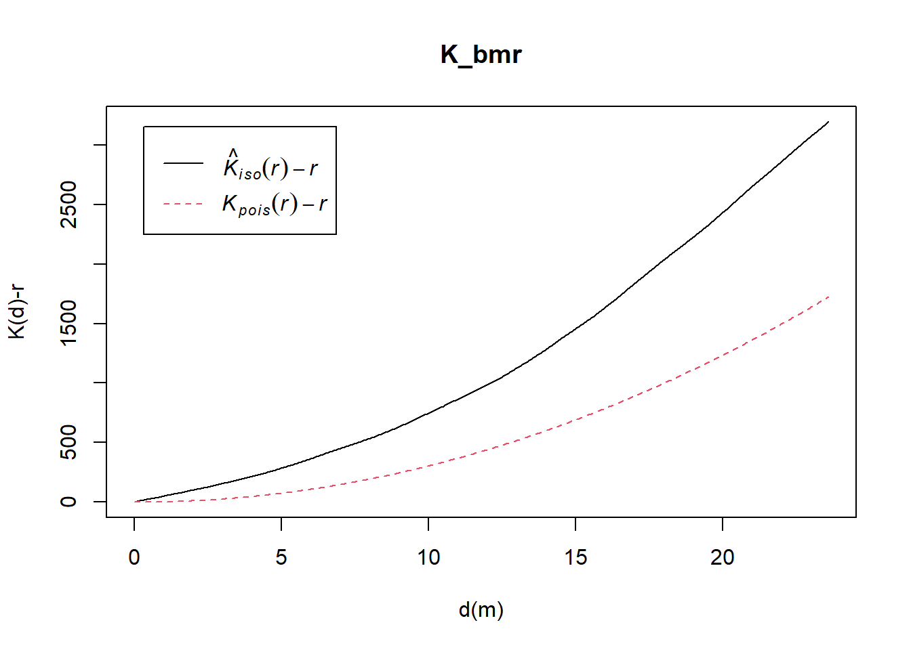
Note
Analysis :
The edge-corrected K̂_iso(r) − r for the Bangkok Metropolitan Region accidents are plotted against the theoretical CSR expectation (red dashed line). The observed edge corrected curve lies consistently above the CSR line with a widening gap up to rmax = 23.58 km, which shows a clustering of accidents rather than spatial randomness that is consistent with the Clark-Evans result (R = 0.265, p < 2.2 × 10⁻¹⁶), which identified strong nearest-neighbour clustering.
Formal significance of the deviation across all distances is assessed in the next section using a global envelope test.
Now we will have to conduct the Complete Spatial Randomness Test to confirm the observed spatial patterns above. To do this, a hypothesis test will be conducted, The hypothesis test will be put under a 5% envelope where p<0.05 for the results to be statistically significant (nsim =39 with this setting).
Ho = The distribution of accidents at the Bangkok Metropolitan Region are randomly distributed.
H1= The distribution of accidents at the Bangkok Metropolitan Region are not randomly distributed.
#A 5% global CSR envelope (nsim = 39, rank = 1), evaluated at 100 distances up to rmax = 23.5 km.
K_bmr.csr <- envelope(acc_bmr_small, Kest,
nsim = 39, rank = 1, global = FALSE,
rmax = 23.5, nrval = 100)Generating 39 simulated realisations of CSR ...
1, 2, 3, 4, 5, 6, 7, 8, 9, 10, 11, 12, 13, 14, 15, 16, 17, 18, 19, 20,
21, 22, 23, 24, 25, 26, 27, 28, 29, 30, 31, 32, 33, 34, 35, 36, 37, 38,
39.
Done.Now we conduct the final plotting
plot(K_bmr.csr, . - r ~ r, xlab="d", ylab="K(d)-r")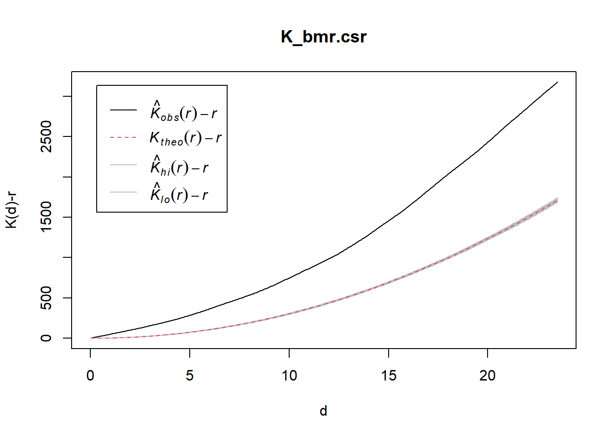
Note
Analysis :
The observed curve K̂_obs(r) − r lies above the upper envelope (grey area) of the 39 simulated CSR patterns at all distances up to rmax = 23.58 km, and the gap widens with increasing d.
This confirms that the accidents in the Bangkok Metropolitan Region does exhibit statistically significant spatial clustering beyond what complete spatial randomness would produce which again is consistent with the Clark-Evans test (R = 0.265, p < 2.2 × 10⁻¹⁶), which identified strong nearest-neighbour clustering.
Together, the two tests have proven that the accidents in the Bangkok Metropolitan Region are not uniformly distributed but concentrate along a spatial structure which most plausibly the urban road network from the Bangkok subregion plot where there are highly intensive highlighted regions on the highways of Bangkok.
North Thailand
First, the set seed is added in to ensure that the points stay the same in every calculation for easier analysis. Then we use the rescaled ppp variables to be put into the Ripley correction to get the best values before we do out the K Function plot for the Bangkok Metropolitan Region.
set.seed(1234)
acc_north_small <- acc_north_ppp.km[sample(npoints(acc_north_ppp.km), 500)]
K_north <- Kest(acc_north_small, correction = "Ripley")plot(K_north, . -r ~ r, ylab= "K(d)-r", xlab = "d(m)")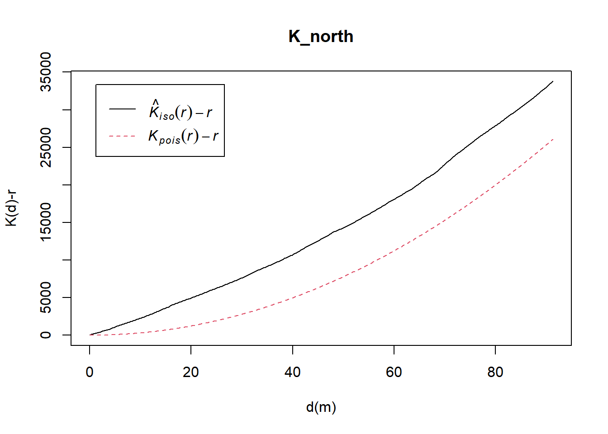
Note
Analysis :
The edge-corrected K̂_iso(r) − r for the North Thailand Region accidents are plotted against the theoretical CSR expectation (red dashed line). The observed edge corrected curve lies consistently above the CSR line with a widening gap up to rmax = 91.37 km, which shows a clustering of accidents rather than spatial randomness that is consistent with the Clark-Evans result (R = 0.3014, p < 2.2 × 10⁻¹⁶), which identified strong nearest-neighbour clustering.
Formal significance of the deviation across all distances is assessed in the next section using a global envelope test.
Now we will have to conduct the Complete Spatial Randomness Test to confirm the observed spatial patterns above. To do this, a hypothesis test will be conducted, The hypothesis and test are as follows:
Ho = The distribution of accidents at the Northern Thailand Region are randomly distributed.
H1= The distribution of accidents at the Northern Thailand Region are not randomly distributed.
#A 5% global CSR envelope (nsim = 39, rank = 1), evaluated at 50 distances up to rmax = 91.37 km.
K_north.csr <- envelope(acc_north_small, Kest,
nsim = 39, rank = 1, global = FALSE,
rmax = 91.37, nrval = 50)Generating 39 simulated realisations of CSR ...
1, 2, 3, 4, 5, 6, 7, 8, 9, 10, 11, 12, 13, 14, 15, 16, 17, 18, 19, 20,
21, 22, 23, 24, 25, 26, 27, 28, 29, 30, 31, 32, 33, 34, 35, 36, 37, 38,
39.
Done.Now we conduct the final plotting
plot(K_north.csr, . - r ~ r, xlab="d", ylab="K(d)-r")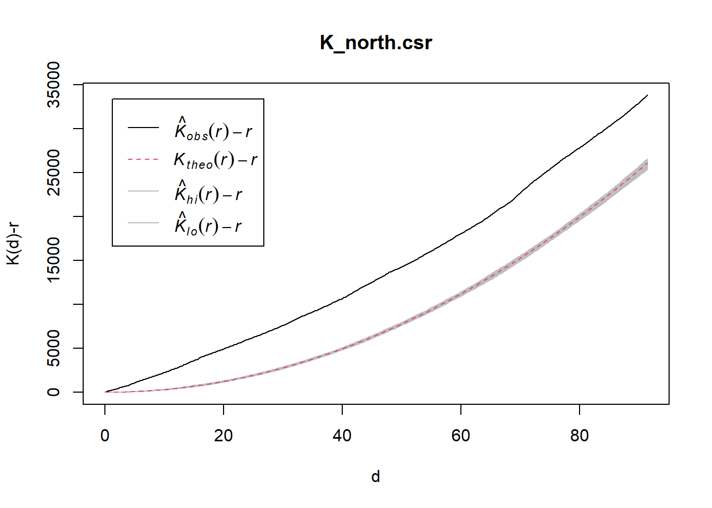
Note
Analysis :
Similar to the Bangkok Metropolitan region, the observed curve K̂_obs(r) − r lies above the upper envelope (grey area) of the 39 simulated CSR patterns at all distances up to rmax = 91.37 km, and the gap widens with increasing d.
This again confirms that the accidents in the Northern Thailand Region does exhibit statistically significant spatial clustering beyond what complete spatial randomness would produce which again is consistent with the Clark-Evans test (R = 0.3014 , p < 2.2 × 10⁻¹⁶), which identified strong nearest-neighbour clustering.
Together, the two tests have proven that the accidents in the North Thailand Region are not uniformly distributed but concentrate along the spatial structure which is clustered more towards the bottom area of North Thailand.
Northern East Thailand
First, the set seed is added in to ensure that the points stay the same in every calculation for easier analysis. Then we use the rescaled ppp variables to be put into the Ripley correction to get the best values before we do out the K Function plot for the Northern East Region.
set.seed(1234)
acc_ne_small <- acc_ne_ppp.km[sample(npoints(acc_ne_ppp.km), 500)]
K_ne <- Kest(acc_ne_small, correction = "Ripley")plot(K_ne, . -r ~ r, ylab= "K(d)-r", xlab = "d(m)")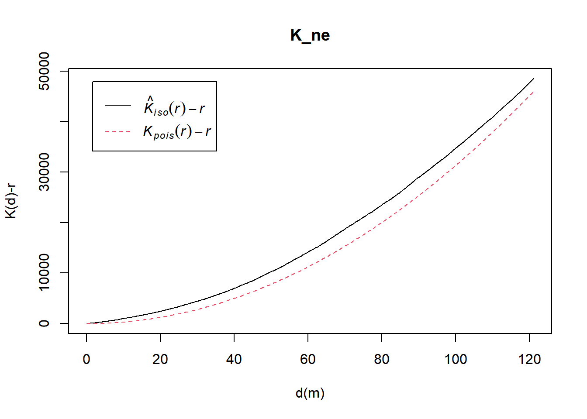
Note
Analysis :
The edge-corrected K̂_iso(r) − r for the North Eastern Thailand Region accidents are plotted against the theoretical CSR expectation (red dashed line). The observed edge corrected curve lies consistently above the CSR line with a widening gap up to rmax = 121.33 km, which shows a clustering of accidents rather than spatial randomness that is consistent with the Clark-Evans result (R = 0.3014, p < 2.2 × 10⁻¹⁶), which identified strong nearest-neighbour clustering. However it is to note that as compared to the other 2 regions, the distance between the edge Corrected line is close to the CSR expectation which suggest that the clustering here in North East Thailand is not as strong as that of the other 2 regions.
Formal significance of the deviation across all distances is assessed in the next section using a global envelope test.
Now we will have to conduct the Complete Spatial Randomness Test to confirm the observed spatial patterns above. To do this, a hypothesis test will be conducted, The hypothesis and test are as follows:
Ho = The distribution of accidents at the Northern East Region are randomly distributed.
H1= The distribution of accidents at the Northern East Region are not randomly distributed.
#A 5% global CSR envelope (nsim = 39, rank = 1), evaluated at 50 distances up to rmax = 121.33 km.
K_ne.csr <- envelope(acc_ne_small, Kest,
nsim = 39, rank = 1, global = FALSE,
rmax = 121.33, nrval = 50)Generating 39 simulated realisations of CSR ...
1, 2, [3:23 remaining] 3,
[3:24 remaining] 4, [3:11 remaining] 5, [3:03 remaining] 6,
[2:52 remaining] 7, [2:46 remaining] 8, [2:34 remaining] 9,
[2:28 remaining] 10, [2:35 remaining] 11, [2:54 remaining] 12,
[3:05 remaining] 13, [3:10 remaining] 14, [3:13 remaining] 15,
[2:59 remaining] 16, [2:48 remaining] 17, [2:43 remaining] 18,
[2:39 remaining] 19, [2:30 remaining] 20, [2:19 remaining] 21,
[2:10 remaining] 22, [2:00 remaining] 23, [1:51 remaining] 24,
[1:43 remaining] 25, [1:34 remaining] 26, [1:27 remaining] 27,
[1:21 remaining] 28, [1:14 remaining] 29, [1:07 remaining] 30,
[1:01 remaining] 31, [54 sec remaining] 32, [47 sec remaining] 33,
[39 sec remaining] 34, [32 sec remaining] 35, [26 sec remaining] 36,
[19 sec remaining] 37, [13 sec remaining] 38, [6 sec remaining]
39.
Done.Now we conduct the final plotting
plot(K_ne.csr, . - r ~ r, xlab="d", ylab="K(d)-r")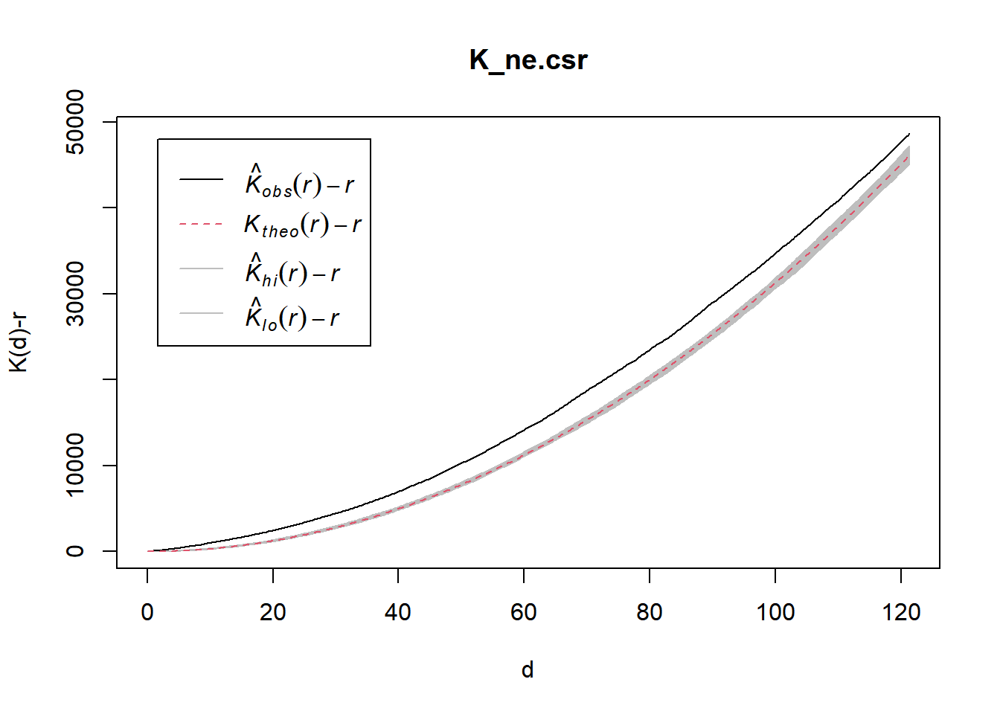
Note
Analysis :
The observed K-curve lies above the upper 5% CSR envelope at all distances above approximately 5km and the gap again widens progressively up to rmax = 121.33 km.
This confirms statistically significant spatial clustering of accidents in North-Eastern Thailand, consistent with the Clark-Evans result (R = 0.419, p < 2.2 × 10⁻¹⁶). However as mentioned before, the magnitude of the deviation is proven again to be smaller than for the Bangkok Metropolitan region and Northern Thailand. The pattern is however qualitatively the same, where the accidents are more spread out across the North Eastern region, but is concentrated along the region’s road network rather than randomly distributed. The narrow grey envelope reflects the high statistical power of the test at n = 1000, so even modest deviations from CSR are detectable.
K-Function plots can be paired together with L-function plots for analysis. However since in overall the K Function plot curve shows obvious deviations from the CSR, there is no need to look at the L function which is the monotone transformation of the K function itself, where this step is redundant in our scenario. Hence we will now move forward to do the integration and interpretation from everything so far.
Task 4 : Integration & Interpretation
Overview
The first-order and second-order analyses conducted in Tasks 2 and 3 examine the same accident datasets with two fundamentally different perspectives.
The first-order analysis involves a point pattern recognition, looking at where and when is the accident intensity the highest where the point pattern is treated as a realisation of a spatially and temporally varying intensity surface.
The second-order analysis instead looks if events interact with one another and at which distance, treating the point pattern as a realisation of a spatial interaction process.
Neither view alone is sufficient to characterise the accident pattern in Thailand; together, however, they provide a coherent and mutually validating picture, which will be integrated and interpreted in this section where the first order analysis will localise the pattern and the second order will characterise it.
Combined Insights
Location
From the first order STKDE, the Bangkok Metropolitan region is a dominant hotspot for accidents where the North and North east regions of Thailand have higher fatality accident rates. This is complemented with the K Function which confirms all accidents within the highlighted regions are clustered at every distance scale with the Bangkok region having the highest magnitude of clustering amongst the 3 regions from the Clark-Evans analysis. This therefore does confirm that the Bangkok Metropolitan region is a genuine multi-scale cluster which cannot be a fact confirmed alone. It also proves that both orders of analysis are highly consistent with each other where strength of clustering and direction are agreed upon across the highlighted regions.
It is to note however, that there is the possibility that some rural accidents are not reported due to the delayed rescue services even though in the assumptions of the exercise we assumed that the data collected is the true representative of Thailand’s accidents in 2022.
Seasonality
It is known that April and December are the peak timings when the accidents frequency is the highest in Thailand which is likely due these months being the primary holiday periods (Chanin,2014) in the country. January and December instead shows a shocking high fatality as compared to the other months. To note, from here it is shown that the fatality STKDE does diverge from the overall STKDE, which shows that the frequency and severity of accidents have to be considered as different spatial processes. From the K function, the spatial clusters are identified within the 3 regions of Thailand, on which highways are more at risk for accidents to occur. With these information combined, it helps the government to identify the holiday period risk zones, at and when to focus efforts to reduce the accident fatalities with greatest impacts.
Severity
The first order STKDE shows that the rural North Thailand and North Eastern region has greater fatality numbers, though the K function is weaker amongst the 3 regions though still being significant. Therefore, when combining the information, it shows that the rural fatal accidents are actually more dispersed but are still non-random from the still present clustering proven. This suggests that the government can still rely on the clustering trends to concentrate efforts on to reduce accident rates but more resources are required.
The Severity or fatality rates in the rural North Thailand and North Eastern region may be higher because of the longer emergency response timings of the emergency services. With common fact that hospitals with advanced medical equipment and resources are usually less accessible in rural areas, more time is required for the person to get emergency help where victims of the accidents in these rural areas may die before reaching the hospital or miss the golden window for treatment. Hence it is possible that some deaths in the rural accidents may not be severe as some of the accidents in the urban areas that has a higher chance to save the accident victims.
Furthermore, the North Eastern region accidents may be more dispersed due to the lower population density within the region, since North Eastern contains the most provinces within Thailand. Hence clustering may look more dispersed.
Assumptions and limitations
As mentioned in task 1, there are assumptions made for the exercise due since there are many layers of factors in reality that is difficult to apply in any type of analysis. It is now explained in detail below.
Independence of events
We do have to note that it is assumed in this exercise that the accidents are independent. However due to the chaotic road conditions and lack of road safety enforcement (ASIRT,2023) , reality shows that there is the presence of multi vehicle crashes and therefore duplicate coordinates. So it has to be noted of the inflation of clustering signals in both the Clark-Evans and K Function calculations and therefore an upper bound on the clustering strength.
Homogeneity
It is assumed on the uniformed risk of accident frequency and fatality across Thailand, but as mentioned the traffic volume and quality can vary in different parts of the country with notably differences between urban and rural roads. Therefore we have to note that the clustering shown in the analysis may have the possibility of reflecting population density variation rather than pure interactions.
Isotropy
The road Networks are linear, but we are assuming that the KDE and K function have the isotropic spread, where the true clustering is through 1D networks rather than a 2D space. Therefore the clustering may be overestimated by a small extent in short distances since the points on the same roads are artificially close in 2D coordinates.
Sampling & Edge effects
In task 3, due to the computation being too high for the code to run proper, sampling is applied to the Bangkok region (1000 subsamples) and the North with North Eastern region (500 subsamples each) which may have the impact of losing a little fine-scale clustering signals. The Ripley correction would also help but the indentity of the multi-polygon windows within the dataset itself would have some imperfections in the edge correction. The Simplification of the OWIN in task 2 also may introduce a little minor boundary distortions though it is still possible to gain major insights.
Task 5 : Geovisualisation and Analytical Interpretation
Vehicle Profile by Region
Since we have the geospatial analysis insights, it is imperative to support it by looking into detail what type of accident has occurred in Thailand in the chosen 3 regions to allow the government to provide better solutions to mitigate accident frequency and severity.
Therefore first it is required to check for the vehicle types and re-group if necessary.
# Check unique vehicle types and their frequencies
acc %>%
st_drop_geometry() %>%
count(vehicle_type, sort = TRUE) %>%
print(n = 30)# A tibble: 15 × 2
vehicle_type n
<chr> <int>
1 4-wheel pickup truck 7722
2 private/passenger car 5240
3 motorcycle 3175
4 large truck with trailer 1712
5 other 926
6 6-wheel truck 817
7 7-10-wheel truck 625
8 van 235
9 large passenger vehicle 101
10 passenger pickup truck 86
11 motorized tricycle 73
12 bicycle 42
13 pedestrian 39
14 tractor/agricultural vehicle 17
15 three-wheeled vehicle 7There are 15 groups in total which may be too granular to give proper insights so we will create 5 groups based on what is available : Pickup, cars, motorcycle, truck and others
acc <- acc %>%
mutate(
vehicle_grp = case_when(
vehicle_type %in% c("4-wheel pickup truck",
"passenger pickup truck") ~ "Pickup",
vehicle_type %in% c("private/passenger car",
"van") ~ "Car",
vehicle_type %in% c("motorcycle",
"motorized tricycle",
"three-wheeled vehicle") ~ "Motorcycle",
vehicle_type %in% c("large truck with trailer",
"6-wheel truck",
"7-10-wheel truck",
"tractor/agricultural vehicle") ~ "Truck",
TRUE ~ "Other" # other, large passenger vehicle, bicycle, pedestrian
)
)
# Verify the grouping
acc %>%
st_drop_geometry() %>%
count(vehicle_grp, sort = TRUE) %>%
mutate(pct = round(100 * n / sum(n), 1))# A tibble: 5 × 3
vehicle_grp n pct
<chr> <int> <dbl>
1 Pickup 7808 37.5
2 Car 5475 26.3
3 Motorcycle 3255 15.6
4 Truck 3171 15.2
5 Other 1108 5.3We also need to aggregate the regions into the original datasets, which will be a simple link since we had defined the region boundaries through a previous task
# Remove the " Province" suffix from all three vectors
bmr_provinces <- str_remove(bmr_provinces, " Province$")
north_provinces <- str_remove(north_provinces, " Province$")
northeast_provinces <- str_remove(northeast_provinces, " Province$")
# Check they now match
print(north_provinces)[1] "Chiang Mai" "Chiang Rai" "Lampang" "Lamphun" "Mae Hong Son"
[6] "Nan" "Phayao" "Phrae" "Uttaradit" # Re-run the region assignment
acc <- acc %>%
mutate(
region = case_when(
province_en %in% bmr_provinces ~ "BMR",
province_en %in% north_provinces ~ "North",
province_en %in% northeast_provinces ~ "North-East",
TRUE ~ "Other"
),
region = factor(region, levels = c("BMR", "North", "North-East", "Other"))
)
acc %>% st_drop_geometry() %>% count(region, sort = TRUE)# A tibble: 4 × 2
region n
<fct> <int>
1 Other 10834
2 North-East 3809
3 BMR 3591
4 North 2583Now with the groupings done we look into creating the actual visuals
Accident Frequency
head(acc)Simple feature collection with 6 features and 19 fields
Geometry type: POINT
Dimension: XY
Bounding box: xmin: 420327.5 ymin: 877127.7 xmax: 935504.6 ymax: 1924811
Projected CRS: WGS 84 / UTM zone 47N
# A tibble: 6 × 20
acc_code incident_datetime report_datetime province_en agency
<dbl> <dttm> <dttm> <chr> <chr>
1 6566872 2022-01-01 00:01:00 2022-01-02 11:45:00 Chai Nat depar…
2 6566880 2022-01-01 00:01:00 2022-01-02 11:44:00 Maha Sarakham depar…
3 5706553 2022-01-01 00:03:00 2022-02-09 08:41:00 Chumphon depar…
4 5485750 2022-01-01 00:05:00 2022-01-02 06:21:00 Phuket depar…
5 5624452 2022-01-01 00:05:00 2022-01-24 09:59:00 Udon Thani depar…
6 6566842 2022-01-01 00:05:00 2022-01-02 11:46:00 Phra Nakhon Si Ayutth… depar…
# ℹ 15 more variables: vehicle_type <chr>, presumed_cause <chr>,
# accident_type <chr>, number_of_vehicles_involved <dbl>,
# number_of_fatalities <dbl>, number_of_injuries <dbl>,
# weather_condition <chr>, road_description <chr>, slope_description <chr>,
# geometry <POINT [m]>, DayofYear <dbl>, Month_num <dbl>, Month_fac <ord>,
# vehicle_grp <chr>, region <fct># Aggregation of original dataset to create visualisation
veh_region <- acc %>%
filter(region != "Other") %>%
st_drop_geometry() %>%
count(region, vehicle_grp, name = "n") %>%
group_by(region) %>%
mutate(pct = 100 * n / sum(n)) %>%
ungroup()
veh_region# A tibble: 15 × 4
region vehicle_grp n pct
<fct> <chr> <int> <dbl>
1 BMR Car 1221 34.0
2 BMR Motorcycle 405 11.3
3 BMR Other 419 11.7
4 BMR Pickup 1030 28.7
5 BMR Truck 516 14.4
6 North Car 681 26.4
7 North Motorcycle 569 22.0
8 North Other 60 2.32
9 North Pickup 1006 38.9
10 North Truck 267 10.3
11 North-East Car 979 25.7
12 North-East Motorcycle 512 13.4
13 North-East Other 206 5.41
14 North-East Pickup 1567 41.1
15 North-East Truck 545 14.3 # Plot
ggplot(veh_region,
aes(x = vehicle_grp, y = pct, fill = region)) +
geom_col(position = position_dodge(width = 0.8), width = 0.7) +
geom_text(aes(label = round(pct, 1)),
position = position_dodge(width = 0.8),
vjust = -0.4, size = 3) +
scale_fill_manual(values = c("BMR" = "#d73027",
"North" = "#4575b4",
"North-East" = "#fdae61")) +
labs(
title = "Vehicle Distribution (Accident Frequency)",
subtitle = "Thailand 2022 accidents within highlighted region",
x = NULL,
y = "Percentage of accidents (%)",
fill = "Region"
) +
theme_minimal(base_size = 12) +
theme(
legend.position = "top",
panel.grid.major.x = element_blank()
)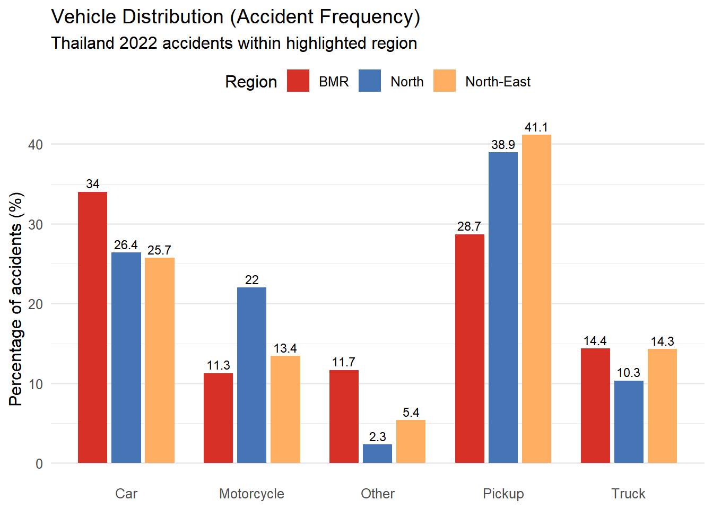
Note
Analysis : vehicle-type composition of all recorded accidents in the BMR, Northern, and North-Eastern regions.
It can be seen that the passenger cars dominate in the Bangkok region (34.0%) while pickup only accounts for 28.7%. However in Northern and North-Eastern Thailand, the pattern reverses where pickups are the leading vehicle type (38.9% and 41.1% respectively), with cars falling to approximately 26%. Motorcycles amongst all vehicle types show the greatest relative divergence where the North having 22% of accidents with motorcycles as compared to the other 2 regions (11.3% & 13.4%).
This suggests that the vehicle mix in rural accidents is skewed towards vehicles associated with higher fatality risk (pickups carrying passengers in open beds, and motorcycles), which may contributes to the elevated rural fatality burden identified in Task 2. This will be confirmed again in the next subsection : accident fatalities.
Caveat: independence assumption : The vehicle type is recorded per accident, not per casualty, so multi-vehicle crashes may under-represent secondary vehicles. Differences in reporting rates between urban and rural areas may also affect the comparison.
Accident Fatalities
# Aggregation of original dataset to create visualisation
veh_region_fatal <- acc %>%
filter(region != "Other", number_of_fatalities > 0) %>%
st_drop_geometry() %>%
count(region, vehicle_grp, name = "n") %>%
group_by(region) %>%
mutate(pct = 100 * n / sum(n)) %>%
ungroup()
veh_region_fatal# A tibble: 15 × 4
region vehicle_grp n pct
<fct> <chr> <int> <dbl>
1 BMR Car 28 17.6
2 BMR Motorcycle 80 50.3
3 BMR Other 2 1.26
4 BMR Pickup 23 14.5
5 BMR Truck 26 16.4
6 North Car 39 16.2
7 North Motorcycle 122 50.8
8 North Other 4 1.67
9 North Pickup 59 24.6
10 North Truck 16 6.67
11 North-East Car 119 20.8
12 North-East Motorcycle 259 45.3
13 North-East Other 22 3.85
14 North-East Pickup 123 21.5
15 North-East Truck 49 8.57# Plot
ggplot(veh_region_fatal,
aes(x = vehicle_grp, y = pct, fill = region)) +
geom_col(position = position_dodge(width = 0.8), width = 0.7) +
geom_text(aes(label = round(pct, 1)),
position = position_dodge(width = 0.8),
vjust = -0.4, size = 3) +
scale_fill_manual(values = c("BMR" = "#d73027",
"North" = "#4575b4",
"North-East" = "#fdae61")) +
labs(
title = "Vehicle Distribution (Accident Fatalities)",
subtitle = "Thailand 2022 fatal accidents within highlighted regions",
x = NULL,
y = "Percentage of fatal accidents (%)",
fill = "Region"
) +
theme_minimal(base_size = 12) +
theme(
legend.position = "top",
panel.grid.major.x = element_blank()
)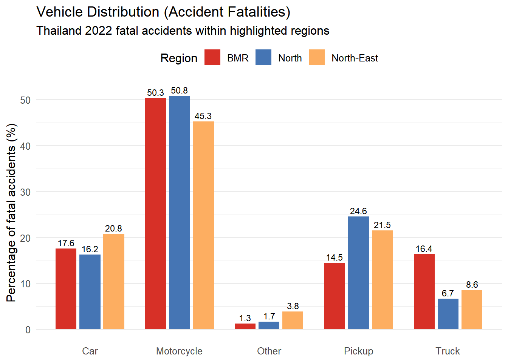
Note
Analysis : vehicle-type composition of fatal accidents in the BMR, Northern, and North-Eastern regions of Thailand in 2022
It is clear that the motorcycles dominate being the cause of fatal accidents in all three regions, accounting for 50.3% in the BMR, 50.8% in the North, and 45.3% in North-Eastern Thailand. Conversely, pickups and cars see their shares drop sharply — pickups fall from around 40% of accidents to an average of 20% of fatalities, while cars fall from around 30% to 16-21%. This shows that overall motorcyclists are at greatest risk of dying when being in an accident so measures should be put in place for them if Thailand wants to see a drop in fatalities.
Caveat: The fatal subsample is smaller (Total of = 2,273 fatalities), so regional percentages carry wider confidence intervals.
Accident Causes
To be able to solve a problem the root cause must be identified. Therefore it is necessary to approach this exercise with the same concept : The main causes for the accidents to occur in Thailand is essential to be known if public safety can be achieved.
acc %>%
st_drop_geometry() %>%
count(presumed_cause, sort = TRUE) %>%
print(n = 50)# A tibble: 49 × 2
presumed_cause n
<chr> <int>
1 speeding 15296
2 cutting in closely by people/vehicles/animals 1538
3 falling asleep 1269
4 vehicle equipment failure 564
5 other 555
6 driving under the influence of alcohol 293
7 running red lights/traffic signals 232
8 unfamiliarity with the route/unskilled driving 161
9 worn-out/tire blowout 112
10 illegal overtaking 99
11 debris/obstruction on the road 82
12 overloaded vehicle 61
13 slippery road 61
14 loss of control 49
15 failure to yield/signal 46
16 brake/anti-lock brake system failure 43
17 reversing vehicle 41
18 tailgating 40
19 failure to yield right of way 39
20 abrupt lane change 38
21 dangerous curve 28
22 insufficient light 26
23 ignoring stop sign while leaving intersection 22
24 using mobile phone while driving 21
25 aggressive driving/overtaking 12
26 medical condition 11
27 inadequate visibility 10
28 sudden stop 10
29 failure to signal enter/exit parking 8
30 vehicle electrical system failure 7
31 disabled vehicle without proper signals 6
32 straddling lanes 6
33 driving without headlights/illumination 4
34 no presumed cause related to road conditions 4
35 repair/construction on the road 4
36 road in poor condition 4
37 driving in the wrong lane 2
38 external disturbance 2
39 internal disturbance 1
40 narrow road 1
41 no presumed cause related to driver 1
42 no presumed cause related to vehicle conditions 1
43 no road divider lines 1
44 no traffic light system 1
45 no traffic signs 1
46 obstruction in sight 1
47 turn signal system failure 1
48 using psychoactive substances 1
49 มึนเมาจากแอลกอฮอล์ 1
Note
มึนเมาจากแอลกอฮอล์ after translation is drunk from alcohol.
So it is best to regroup the accident causes so that a good analysis can be done. The groupings will be decided as such :
speeding since it as the greatest numbers of 15296 amongst all other groups and has to be a standalone.
Reckless Driving: Known to be deliberate and unsafe manoeuvres on the road, which will be an interesting cause to be studies within the urbans areas.
Driver state/Fatigue : Known to be driver-state issues, which is a psychological type of group that is separate from the deliberate risk-takers and is hence worth studying on its own.
Vehicle Failure : Mechnical issues, it is also worth knowing to see if imposes on vehicle maintenance or scrapping is required.
Alcohol/Drugs : it is an important standalone cause that is enforceable and well-studied, it is also difficult to lump this category therefore under others or any other groups
Environmental: Accidents can occur due to mother nature which may an influence worth noting in Thailand
Others
acc <- acc %>%
mutate(
cause_grp = case_when(
# Speeding
str_detect(presumed_cause,
regex("^speeding$", ignore_case = TRUE)) ~ "Speeding",
# Alcohol/Drugs
str_detect(presumed_cause,
regex("alcohol|psychoactive|มึนเมา",
ignore_case = TRUE)) ~ "Alcohol / Drugs",
# Fatigue
str_detect(presumed_cause,
regex("falling asleep|fatigue|drowsy|medical condition|mobile phone",
ignore_case = TRUE)) ~ "Fatigue",
# Reckless Driving
str_detect(presumed_cause,
regex("cutting in|illegal overtaking|aggressive|loss of control|tailgat|abrupt lane|sudden stop|straddling|reversing|running red light|ignore.*stop|failure to yield|wrong lane|without headlights|failure to signal|unfamiliar",
ignore_case = TRUE)) ~ "Reckless Driving",
# Vehicle Failure
str_detect(presumed_cause,
regex("equipment failure|tire|tyre|brake|electrical|turn signal|overloaded|disabled vehicle",
ignore_case = TRUE)) ~ "Vehicle Failure",
# Environmental
str_detect(presumed_cause,
regex("debris|slippery|dangerous curve|insufficient light|visibility|road.*condition|construction|narrow|divider|traffic light|traffic sign|obstruction|repair|external disturbance|internal disturbance|no presumed cause",
ignore_case = TRUE)) ~ "Environmental",
# Others
TRUE ~ "Others"
),
cause_grp = factor(cause_grp, levels = c(
"Speeding", "Reckless Driving", "Fatigue",
"Vehicle Failure", "Alcohol / Drugs", "Environmental", "Others"
))
)
# To verify the classification in case of errors
acc %>%
st_drop_geometry() %>%
count(cause_grp, sort = TRUE) %>%
mutate(pct = round(100 * n / sum(n), 1))# A tibble: 7 × 3
cause_grp n pct
<fct> <int> <dbl>
1 Speeding 15296 73.5
2 Reckless Driving 2325 11.2
3 Fatigue 1301 6.2
4 Vehicle Failure 794 3.8
5 Others 577 2.8
6 Alcohol / Drugs 295 1.4
7 Environmental 229 1.1acc %>%
filter(region != "Other") %>%
st_drop_geometry() %>%
count(region, cause_grp) %>%
group_by(region) %>%
mutate(pct = round(100 * n / sum(n), 1)) %>%
select(region, cause_grp, pct) %>%
pivot_wider(names_from = region, values_from = pct) %>%
print()# A tibble: 7 × 4
cause_grp BMR North `North-East`
<fct> <dbl> <dbl> <dbl>
1 Speeding 71.3 78.5 76.7
2 Reckless Driving 8.4 9.6 10.5
3 Fatigue 2 5.4 7.5
4 Vehicle Failure 3.3 2.3 2.8
5 Alcohol / Drugs 1.1 2.8 1.2
6 Environmental 0.7 1.1 0.9
7 Others 13.3 0.3 0.3#Aggregating values
cause_region <- acc %>%
filter(region != "Other") %>%
st_drop_geometry() %>%
count(region, cause_grp) %>%
group_by(region) %>%
mutate(pct = round(100 * n / sum(n), 1)) %>%
ungroup()
#Plotting heatmap
ggplot(cause_region, aes(x = region, y = cause_grp, fill = pct)) +
geom_tile(colour = "white", linewidth = 0.8) +
geom_text(aes(label = paste0(pct, "%")),
colour = "black", size = 3.8) +
scale_fill_stepsn(
colors = c("#fee5d9", "#fcae91", "#fb6a4a", "#cb181d", "#67000d"),
breaks = c(0, 2, 5, 10, 20, 80),
name = "% of accidents"
) +
labs(
title = "Presumed Cause Profile by Region",
subtitle = "Thailand 2022",
x = NULL, y = NULL
) +
theme_minimal(base_size = 12) +
theme(
panel.grid = element_blank(),
axis.text.x = element_text(size = 11),
axis.text.y = element_text(size = 11),
legend.position = "right"
)
Note
Analysis : Presumed Cause Profile by Region
Speeding dominates all three regions (71.3%–78.5%), though variation variation can be seen in smaller causes.
Fatigue rises sharply from urban to rural settings with 2.0% of accidents in the Bangkok region, 5.4% in the North, and 7.5% in the North-East, suggesting long rural roads causes more fatigue.
Reckless driving is stable across regions (8.4%–10.5%), suggesting it is a universal problem rather than an urban-specific one. Alcohol and drug involvement is surprisingly low with the North highlighted at 2.8% (compared to 1.1% and 1.2%)
Notably, the BMR records 13.3% of accidents as “Other” compared to only 0.3% in rural regions — a data-quality discrepancy suggesting BMR cause classification is less reliable.
Caveat: The cause of the accident is likely to be deemed through field judgment, rather than a forensic finding and Speeding’s dominance may be reflecting recording practice instead the true cause.
# Aggregating values
cause_veh <- acc %>%
filter(vehicle_grp != "Other", region != "Other") %>%
st_drop_geometry() %>%
count(vehicle_grp, cause_grp) %>%
group_by(vehicle_grp) %>%
mutate(pct = round(100 * n / sum(n), 1)) %>%
ungroup()
# Heatmap
ggplot(cause_veh, aes(x = vehicle_grp, y = cause_grp, fill = pct)) +
geom_tile(colour = "white", linewidth = 0.8) +
geom_text(aes(label = paste0(pct, "%")),
colour = "black", size = 3.8) +
scale_fill_gradient(low = "#fee5d9", high = "#a50f15",
name = "% within vehicle") +
labs(
title = "Presumed Cause Profile by Vehicle Type",
subtitle = "Thailand 2022",
x = NULL, y = NULL
) +
theme_minimal(base_size = 12) +
theme(
panel.grid = element_blank(),
axis.text.x = element_text(size = 11),
axis.text.y = element_text(size = 11),
legend.position = "right"
)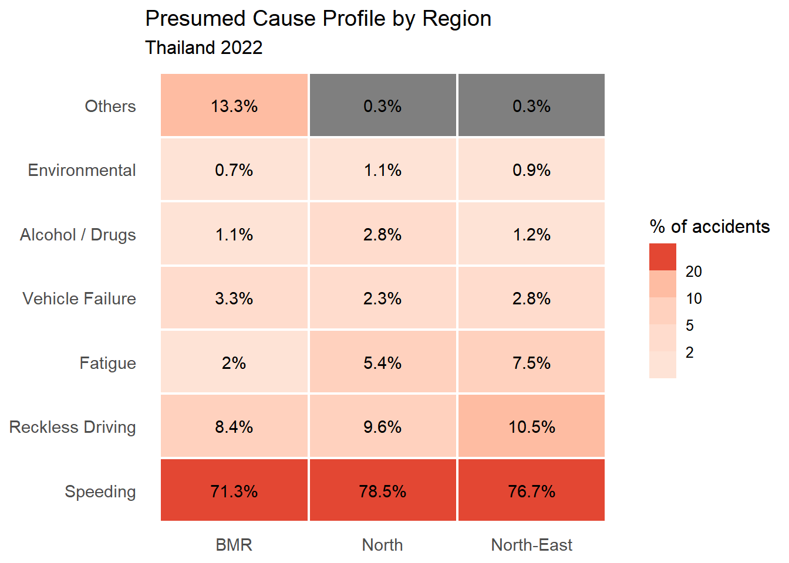
Note
Presumed Cause Profile by Vehicle Type
Again it is clear that speeding is the cause that dominates all vehicle types as well. However reckless driving is disproportionately recorded for motorcycle accidents (21.8%), compared to 7%–8.8% for all other vehicles. So motorcyclist exhibit more reckless driving behaviours like cutting lanes and illegal overtaking, a common behaviour motorcyclists have during high traffic situations, increasing risk of accidents exponentially.
Vehicle failure concentrates in trucks (7.4%), reflecting the mechanical complexity and heavier loads of commercial vehicles, while fatigue is roughly even across cars, pickups, and trucks (5.7%–6.3%) but notably lower for motorcycles (1.5%).
Alcohol/drug involvement is highest for motorcycles (5.8%), which is consistent with the higher risk profile of motorcyclists in Thailand.
Caveat: The cause of the accident is likely to be deemed through field judgment, rather than a forensic finding, especially with the careless denoting of the original dataset where มึนเมาจากแอลกอฮอล์ should be directly put into “alcohol”
Task 6 : Public Safety Planning & Management
Recap of Analysis findings
The spatio-temporal kernel density estimates and Clark-Evans tests provide strong evidence that road traffic accidents in Thailand are not randomly distributed, and all three highlighted regions: the Bangkok Metropolitan Region (BMR), Northern Thailand, and North-Eastern Thailand show statistically significant clustering (p < 2.2 × 10⁻¹⁶).
BMR has the strongest clustering (R = 0.265) and functions as a constant, accident hotspot. But the Northern and North-Eastern regions has an elevated fatality intensity despite showing dispersed patterns (R = 0.301 and R = 0.419, respectively), especially in January and December.
Accident frequency peaks in April and December, coinciding with the Songkran and New Year holidays. While fatality intensity concentrates in January and December, mainly in rural regions from the temporal analysis.
Vehicle-type profiling further shows that motorcycles account for over 45% of fatal accidents across all three regions, with pickup trucks dominating accident frequency in rural areas. Speeding is seen as the main cause in 71–79% of accidents, though it may be a recording practice rather a forensic finding.
Recommendations & Way Ahead
The findings will aid resource allocation and emergency response planning.
With the BMR as a multi-scale, statistically significant cluster, the government can have targeted infrastructure investment into areas like road redesigning, improved signages, and speed-calibration measures at specific highway segments identified in the K-function plots.
Whereas for Northern and North-Eastern Thailand, the elevated rural fatality burden suggests a need for enhanced emergency medical services and faster response times, given the association between rurality, delayed treatment, and higher death rates.
Seasonal peaks (January, April, and December) should be flagged to schedule enforcement campaigns like speed checks, DUI checkpoints, and patrols with more focus on the speed checks like building more automated police cameras to stop speeding since it is a dominating cause of accidents.
Motorcycles being the most common vehicle in fatal accidents, more policies should be enforced for mandatory helmet use, rider training, and infrastructure separation.
Interpretations requiring additional analysis
It is determined that fatality intensity is higher in rural areas may likely be due to longer emergency response times. But more analysis is required where hospital locations are needed to look at hospital access, or current road design to have a better understanding on how exactly should the roads be improved for public safety.
Recommendations like vehicle safety inspections also require additional data on traffic volume at peak hours, road conditions, enforcement density, and socio-economic factors for the best decision making.
(395 words)